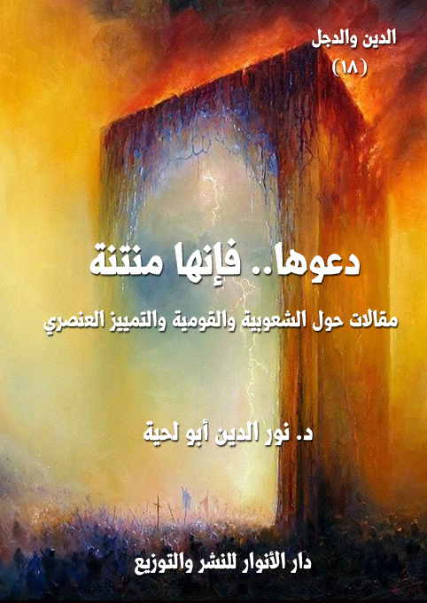

الكتاب: دعوها.. فإنها منتنة
الوصف: مقالات حول الشعوبية والقومية والتمييز العنصري
المؤلف: أ.د. نور الدين أبو لحية
الناشر: دار الأنوار للنشر والتوزيع
الطبعة: الأولى، 1439 هـ
عدد الصفحات: 124
ISBN: 978-620-2-34856-0
لمطالعة الكتاب من تطبيق مؤلفاتي المجاني وهو أحسن وأيسر: هنا

التعريف بالكتاب
ذلك أن الذي نطبق بها ليس صحفيا، ولا كاتبا، ولا باحثا، ولا فيلسوفا، ولا عالم اجتماع، ولا عالم نفس.. بل الذي نطق بها هو من لا ينطق عن الهوى.. رسول الله صلى الله عليه وآله وسلم.. ذلك الذي لا يقول إلا الحق في رضاه أو غضبه..
ولذلك فإنها تعبر عن الحقيقة بكل معانيها وتجلياتها..
فالذي يدعو إلى العصبية والعرقية والهوية التي تميزه عن سائر إخوانه في الإنسانية إنما يدعو في الحقيقة إلى القذارة والنتانة.. ذلك أنه يدعو إلى عالم الطين والحمأ المسنون، ويغفل عن الروح والعوالم العلوية التي صدرت منها.. لذلك تفوح من أحاديثه رائحة الطين والحمأ المسنون..
ولهذا دعا رسول الله صلى الله عليه وآله وسلم إلى الترفع عن هذا العالم، والنظر إلى الإنسان باعتبار جوهره وحقيقته الروحية، لا حقيقته الجسدية التي يؤدي بها دوره التكليفي المؤقت في هذه الحياة الدنيا.
دعوها.. فإنها منتنة (6)
دعوها، فإنها منتنة..
ليست هذه الجملة عنوانا صحفيا مثيرا، ولا كلمة اعتباطية خالية من أي دلالة حقيقية.. بل إنها كلمة تعبر عن حقيقة من حقائق الوجود، وسنة من سنن الكون.
ذلك أن الذي نطبق بها ليس صحفيا، ولا كاتبا، ولا باحثا، ولا فيلسوفا، ولا عالم اجتماع، ولا عالم نفس.. بل الذي نطق بها هو من لا ينطق عن الهوى.. رسول الله صلى الله عليه وآله وسلم.. ذلك الذي لا يقول إلا الحق في رضاه أو غضبه..
ولذلك فإنها تعبر عن الحقيقة بكل معانيها وتجلياتها..
فالذي يدعو إلى العصبية والعرقية والهوية التي تميزه عن سائر إخوانه في الإنسانية إنما يدعو في الحقيقة إلى القذارة والنتانة.. ذلك أنه يدعو إلى عالم الطين والحمأ المسنون، ويغفل عن الروح والعوالم العلوية التي صدرت منها.. لذلك تفوح من أحاديثه رائحة الطين والحمأ المسنون..
ولهذا دعا الناصح الأكبر للبشرية رسول الله صلى الله عليه وآله وسلم إلى الترفع عن هذا العالم، والنظر إلى الإنسان باعتبار جوهره وحقيقته الأبدية، لا باعتبار المرحلة القصيرة التي لبس فيها هذا الطين، ليؤدي دوره التكليفي المؤقت، وليختار العالم الذي يعيش فيه.
وقد توالت التحذيرات النبوية من النظر إلى الإنسان بهذا الاعتبار، فكان
دعوها.. فإنها منتنة (7)
يستعمل كل وسائل الترغيب والترهيب، ليقضي على تلك الحمية الجاهلية التي كانت تصنف البشر بحسب ألوانهم ولغاتهم وأعراقهم وتواريخهم وجغرافيتهم وأحجام جماجهم.. وكأنهم مسؤولون ومحاسبون على شيء ليس في طاقتهم، ولا في وسعهم.
ومن تلك التحذيرات، تحذيره صلى الله عليه وآله وسلم من أخطر تجليات العنصرية العرقية، وهي العصبية الجاهلية، التي كانت تدعو إلى قتال الأعراق بعضها لبعض، وإلغاء بعضها لبعض، قال صلى الله عليه وآله وسلم: (ليس منا من دعا إلى عصبية، وليس منا من قاتل على عصبية، وليس منا من مات على عصبية) (1)، فهذا الحديث الخطير يخرج من الأمة من كان يحمل أدنى بذرة من بذور العصبية والعرقية والجهوية والطائفية، والتي تحول بينه وبين التجرد الحقيقي للانتساب للدين، فلذلك لم تكن نسبته للدين نسبة كافية، فهو مع الدين في عقائده وشعائره، ولكنه ليس معه في قيمه وأخلاقه، وأولها إنسانيته وعالميته.
وهكذا حذر رسول الله صلى الله عليه وآله وسلم من التفاخر بين الأعراق، والذي يدعو إلى الضغينة والأحقاد، قال صلى الله عليه وآله وسلم: (إن الله أوحى إليّ أن تواضعوا حتى لا يبغي أحد على أحد ولا يفخر أحد على أحد) (2)
ولذلك كان صلى الله عليه وآله وسلم يصحح المفاهيم كل حين حول حقيقة الإنسان، وحقيقة
__________
(1) أبو داود (4/ 332، رقم 5121).
(2) رواه مسلم (4/ 2198 رقم 2865)، والبزار (8/ 424، رقم 3495)
دعوها.. فإنها منتنة (8)
العلاقات التي ينبغي أن تسري بين البشرية، ومن ذلك قوله صلى الله عليه وآله وسلم: (إن الله قد أذهب عنكم عبية الجاهلية وفخرها بالآباء، مؤمن تقى وفاجر شقى، أنتم بنو آدم وآدم من تراب، ليدعن رجال فخرهم بأقوام إنما هم فحم من فحم جهنم، أو ليكونن أهون على الله من الجعلان التى تدفع بأنفها النتن) (1)
وهذا الحديث الشريف مدرسة في بابه، وهو خطاب عقلي ونفسي لكل عنصري ترك الحقيقة الإنسانية السامية، وراح يبحث في عالم الطين، وهو وحده كاف لمن تأمله للتخلص من كل القيود التي تتثاقل به الأرض، وتجعله يرى الحياة كما يراها الجعلان الذي يدفع بأنفه النتن.
وبناء على هذا، فإن القاعدة التي تحكم المسلمين، والتي نصت عليها النصوص المقدسة، هي ما عبر عنه رسول الله صلى الله عليه وآله وسلم في حجة الوداع في تلك الخطبة الشاملة لكل القيم الإنسانية الرفيعة، فقد قال صلى الله عليه وآله وسلم: (يا أيها الناس، إن الله قد أذهب عنكم عبية الجاهلية، وتعاظمها بآبائها، الناس رجلان: بر تقي كريم على الله عز وجل، وفاجر شقي هين على الله عز وجل، الناس كلهم بنو آدم، وخلق الله آدم من تراب، قال الله تعالى: {يَاأَيُّهَا النَّاسُ إِنَّا خَلَقْنَاكُمْ مِنْ ذَكَرٍ وَأُنْثَى وَجَعَلْنَاكُمْ شُعُوبًا وَقَبَائِلَ لِتَعَارَفُوا إِنَّ أَكْرَمَكُمْ عِنْدَ اللَّهِ أَتْقَاكُمْ إِنَّ اللَّهَ عَلِيمٌ خَبِيرٌ} [الحجرات: 13]) (2)
__________
(1) رواه أحمد (2/ 523، رقم 10791)، وأبو داود (4/ 331، رقم 5116)، والبيهقى (10/ 232، رقم 20851). وأخرجه أيضا: الترمذى (5/ 735، رقم 3956)
(2) عبد بن حميد (795) والترمذي (3270).
دعوها.. فإنها منتنة (9)
لكن هذه التوجيهات النبوية لم تلق العناية الكافية، ومن الأجيال الأولى من المسلمين، حيث بدأ التصنيف العرقي بمجرد وفاة رسول الله صلى الله عليه وآله وسلم، وحصل الخلاف بين بعض المهاجرين وبعض الأنصار ممن لم يتشربوا القيم الإسلامية تشربا كافيا.
وزاد حكم الطلقاء للمسلمين المسألة تعقيدا، حيث عادت الجاهلية العرقية بأثواب مختلفة، أهمها ذلك التعالي الذي أبداه بعض العرب تجاه الموالي، وكان بداية لنشوء القومية العربية الممتلئة بالعنصرية المقيتة.
وقد ذكر المؤرخون والأدباء الكثير من المظاهر الاجتماعية لذلك (1)، ومنها أن نافعا بن جبير بن مطعم طلب من رجل من أهل الموالي من غير العرب أن يصلي به، فاستفسروا عن سبب ذلك؛ فقال: إنما أردت أن أتواضع لله بالصلاة خلفه.
ورووا أنه كان إذا مرّت به جنازة قال: من هذا؟ فإذا قالوا قرشي؛ قال: واقوماه! وإذا قالوا: عربي؛ قال: وابلدتاه! وإذا قالوا: مولى؛ قال: هو مال الله، يأخذ ما شاء ويدع ما شاء.
وذكر ابن عبد ربه والجاحظ وغيرهما بعض مظاهر التمييز العنصري التي كان يبديها القوميون من العرب تجاه العجم، فذكروا أنهم كانوا يقولون: (لا يقطع الصلاة إلا ثلاثة: حمار، أو كلب أو مولى)، وأنهم (كانوا لا يكنونهم بالكنى، ولا يدعونهم إلا بالأسماء والألقاب، ولا يمشون في الصف معهم، ولا يتقدمونهم في الموكب، وإن حضروا طعاما قاموا على رؤسهم، وإن أطمعوا المولى لسنّه وفضله
__________
(1) انظر العقد الفريد (3/ 360)
دعوها.. فإنها منتنة (10)
وعلمه أجلسوه في طرف الخوان؛ لئلا يخفى على الناظر أنه ليس من العرب، ولا يدعونهم يصلون على الجنائز إذا حضر أحد من العرب، وإن كان الذي يحضر غريرا؛ وكان الخاطب لا يخطب المرأة منهم إلى أبيها ولا إلى أخيها، وإنما يخطبها إلى مواليها؛ فإن رضي زوّج وإلا ردّ، فإن زوّج الأب والأخ بغير رأي مواليه فسخ النكاح، وإن كان قد دخل بها كان سفاح غير نكاح) (1)
بل إن الأمر بلغ أخطر من ذلك، فقد روي أن معاوية دعا الأحنف بن قيس وسمرة بن جندب، فقال: (إني رأيت هذه الحمراء ـ يقصد غير العرب ـ قد كثرت، وأراها قد طعنت على السلف، وكأني أنظر إلى وثبة منهم على العرب والسلطان؛ فقد رأيت أن أقتل شطرا وأدع شطرا لإقامة السوق وعمارة الطريق؛ فما ترون؟ فقال الأحنف: أرى أن نفسي لا تطيب؛ أخي لأمي وخالي ومولاي، وقد شاركناهم وشاركونا في النسب. فظننت أني قد قتلت عنهم؛ وأطرق. فقال سمرة بن جندب: اجعلها إلىّ أيها الأمير، فأنا أتولى ذلك منهم وأبلغ منه. فقال: قوموا حتى أنظر في هذا الأمر.. قال الأحنف: فقمنا عنه وأنا خائف، وأتيت أهلي حزينا؛ فلما كان بالغداة أرسل إليّ، فعلمت أنه أخذ برأيي وترك رأي سمرة) (2)
بل إن الأمر لم يقتصر على عوام الناس وخاصتهم، بل تعداه إلى أهل الدين منهم، وخصوصا أولئك الذين حصروا الدين في الطقوس والشعائر، وغفلوا عن
__________
(1) العقد الفريد (3/ 361)
(2) العقد الفريد (3/ 361)
دعوها.. فإنها منتنة (11)
الأخلاق والقيم، فقد رووا أن عامر بن عبد القيس ـ مع نسكه وزهده وتقشفه وإخباته وعبادته ـ كلّمه حمران مولى عثمان بن عفان عند عبد الله بن عامر صاحب العراق في تشنيع عامر على عثمان وطعنه عليه، فأنكر ذلك، فقال له حمران: لا كثّر الله فينا مثلك! فقال له عامر: بل كثّر الله فينا مثلك! فقيل له: أيدعو وتدعو له؟ قال: نعم، يكسحون طرقنا، ويخرزون خفافنا، ويحركون ثيابنا. فاستوى ابن عامر جالسا، وكان متكئا، فقال: ما كنت أظنك تعرف هذا الباب، لفضلك وزهادتك. فقال: ليس كل ما ظننت أني لا أعرفه، لا أعرفه.
وليت الأمر اقتصر على كل هذا، بل تعداه إلى الفقهاء أنفسهم، والذين راحوا يدعون إلى العصبية العربية من غير شعور، وكأنها حقيقة مطلقة، حتى اعتبروا ما دل من النصوص السابقة على الأخوة العامة بين المؤمنين خاصا بالآخرة، فقد نقل بعضهم قول مالك قوله: لا تعتبر الكفاءة إلا في الدين، واستدلاله من القرآن والسنة على ذلك فرد عليه بقوله: (قلنا: المراد به في حكم الآخرة وكلامنا في الدنيا)، قال الشارح: (وإلا ففي الدنيا ثابت فضل العربي على العجمي بالإجماع) (1)
ولسنا ندري أي إجماع يدعيه، ولا أي مستند لذلك الإجماع، بل الإجماع هو ما نص عليه رسول الله صلى الله عليه وآله وسلم وما دل عليه القرآن الكريم، وما أيدته قواعد الدين ومقاصده الكلية.
__________
(1) تبيين الحقائق:2/ 128.
دعوها.. فإنها منتنة (12)
وقد نقل بعضهم مذهب الغزالي في النسب، ورد عليه بقوله: (قال الإمام والغزالي: وشرف النسب من ثلاث جهات: جهة النبوة وجهة العلم وجهة الصلاح المشهور، ولا عبرة بالانتساب لعظماء الدنيا والظلمة المستولين على الرقاب، وإن تفاخر الناس بهم)، قال الرافعي: ولا يساعدهما عليه كلام النقلة في العظماء، فيعتبر الانتساب إليهم... وكيف لا يعتبر وأقل مراتب الإمرة ونحوها أن تكون كالحرفة؟ وذو الحرفة الدنيئة لا يكافئ النفيسة) (1)
وقد نشأ عن فتح هذا الباب العصبية المحرمة بين العرب وغيرهم، بل بين العرب أنفسهم، بل نجد هذه العصبية قد انتقلت لكتب الفقه نفسها، ففي كتاب منها يقول صاحبه: (سائر العرب بعضهم أكفاء لبعض، وبنوا باهلة ليسوا بأكفاء لعامة العرب؛ لأنهم يعرفون بالخساسة قيل: إنهم يستخرجون النقي من عظام الميتة ويأكلونه قال الشاعر:
إذا قيل للكلب يا باهلي عوى الكلب من لؤم هذا النسب) (2)
فهؤلاء الفقهاء ـ مع احترامنا لهم ـ تركوا الأدلة الصريحة الصحيحة لقول شاعر، ويمكنهم لو ساروا على منواله أن يهجوا القبائل جميعا، بل الخلق جميعا.
وقد كان كل هذا التعصب للقومية العربية سببا في ظهور ما أطلق عليه [الشعوبية]، وهي التعصب للأعراق المختلفة من الفارسية والكردية وغيرها،
__________
(1) شرح البهجة:4/ 124.
(2) الجوهرة النيرة:2/ 11،وانظر: فتح القدير:3/ 298.
دعوها.. فإنها منتنة (13)
والتي لا نزال نعيش آثارها إلى اليوم.
بناء على هذا كانت هذه المقالات محاولة للدعوة إلى العودة إلى الإنسانية التي دعت إليها مصادر الدين المقدسة، وقد ركزت فيها خصوصا على [الدعوة الأمازيغية] باعتبارها نموذجا عن الحركات العنصرية القومية، ولكونها حركة جديدة مقارنة بغيرها من الحركات، ولكونها بدأت تتشكل وتنتشر في المغرب العربي، لتنحرف بلغته السليمة، وفطرته النقية، لتحوله إلى أداة من أدوات التفتيت والصراع.
وأحب أن أنبه إلى أن مقصدنا من هذه المقالات هو النصيحة لا غير، فأنا شخصيا أعرف الكثير من الأمازيغ المؤمنين الطيبين الذين يفخرون بانتمائهم للحضارة الإسلامية في ثوبها العربي، ولا يرون أي حاجز بين حبهم للعربية وحرصهم عليها، وبين كونهم أمازيغ يعيشون بين قومهم بحسب العادات التي تعودوا عليها، واللغة التي ينطقون بها.
لكن حديثي مع أولئك الذين يريدون خلع الثوب العربي عنهم، مع كونهم يعرفون العربية، ويتقنونها مثلهم مثل سائر العرب، لكنهم ينظرون إليها باستكبار، بل ينظرون إليها كما ينظرون إلى الاستعمار، ويودون لو أن كل الألسن عجمت حتى لا يُنطق في الشمال الإفريقي إلا باللسان الأمازيغي.
وقد وصل الحقد ببعضهم إلى درجة تبني القيم النازية والصهيونية من الدعوة إلى طرد العرب، أو ربما إبادتهم في المستقبل حتى يخلص الشمال الإفريقي
دعوها.. فإنها منتنة (14)
للأمازيغ.
وقد وجدت هذه الدعوات رعاية كافية من دوائر الاستكبار العالمي التي راحت تدعمها بكل صنوف التدعيم، فتنشر المظلومية الأمازيغية، كما نشرت قبل ذلك المظلومية اليهودية.. لتحول أرضنا بعد ذلك إلى محرقة لا تقل عن محرقة اليهود.
دعوها.. فإنها منتنة (15)
الرؤية التوحيدية والدعوات القومية
من المستحيلات العقلية الجمع بين الرؤية العرفانية التوحيدية للكون، والرؤية القومية، فهما على طرفي نقيض.. بل هم رؤيتان متوازيتان، يستحيل أن يجتمعا في عقل أو قلب واحد.
ذلك أن الرؤية القومية هي نوع من تضخم الأنا.. بل هي تجل من تجليات كبريائها وغرورها وعجبها.. حيث تتصور أن الكمال فيما ارتبطت به، والنقص فيما ابتعدت عنه، وبذلك تجعل نفسها المركز والمحور والقطب الذي تدور حوله الحقائق..
وهي بذلك، ووفق الرؤية التوحيدية العرفانية ليست سوى رؤية شركية، لأنها تجعل الأنا والقومية شريكا لله تعالى.
بينما الرؤية العرفانية التوحيدية تنظر للكون من زاوية مختلفة تماما.. فرحلة العارفين تنطلق من الكون إلى المكون، كما قال ابن عطاء الله: (لا ترحل من كون إلى كون، فتكون كحمار الرحى يسير والذي ارتحل إليه هو الذي ارتحل منه، ولكن ارحل من الأكوان إلى المكون: {وَأَنَّ إِلَى رَبِّكَ الْمُنْتَهَى} (النجم:42)
ولذلك تعتبر سكون الإنسان للأشياء، وفرحه بها، وعدم عبوره منها إلى خالقها وقوفا، بل سقوطا، كما عبر عن ذلك بعضهم، فقال: (لو أن رجلا دخل إلى بستان فيه من جميع ما خلق الله تعالى من الأشجار، عليها من جميع ما خلق الله تعالى
دعوها.. فإنها منتنة (16)
من الأطيار، فخاطبه كل طائر منها بلغته، وقال: السلام عليك يا ولي الله، فسكنت نفسه إلى ذلك كان في يدها أسيرا)
وهي تنطلق في ذلك من قرءاة عرفانية لقوله تعالى: {الْحَمْدُ لِلَّهِ رَبِّ الْعَالَمِينَ} [الفاتحة: 2].. فالله رب العالمين، وليس ربا لقوم دون قوم.. ولذلك هي تنظر للأقوام جميعا بهذا الاعتبار، فلا تحقر أحدا من الناس.. وكيف تحقره.. والله هو الذي خلقه؟
وهي لذلك أيضا لا تتجرأ أن تفضل عرقها على أي عرق آخر.. وكيف تفعل ذلك، وبأي اعتبار، وهي ترى نفسها وقومها وكل شيء من الله وبالله ولله.. وإن جاز لأحد أن يفضل.. فهو الله تعالى، لأنه هو الخالق والمالك، ولا يجوز لأحد أن يكون شريكا له في ذلك، وإلا وقع في الفخ الذي وقع فيه إبليس حين فضل نفسه على آدم.
وهي كذلك تقرأ كل شيء باسم الله.. كما أمر الله تعالى بذلك، فقال: {اقْرَأْ بِاسْمِ رَبِّكَ الَّذِي خَلَقَ} [العلق: 1].. ويستحيل على من قرأ الأشياء باسم الله أن يقع في فخاخ الأنا.. لأنه يرى الأشياء كلها سماءها وأرضها ملك لله.. فلا يقول عن أي شيء: هذا لي.. بل يقول دائما: هذا لله.
وهي فوق ذلك كله تعتبر اللغة وسيلة.. وتعتبر اللغات جميعا طرقا للرحلة إلى الله، لأنه الهدف الوحيد في الوجود.. وما عداه وسائل.. وقد عبر الشيخ ابن عليوة عن هذا المعنى أثناء رده على من تستعبدهم اللغات، ولا يلتفتون لما خلفها،
دعوها.. فإنها منتنة (17)
فقال: (فإذا كان هؤلاء القوم يستخرجون الجدّ من الهزل، فكيف لا يستخرجون الجدّ من الجدّ، بل لهم ذلك لكونهم لا يقفون عند ظاهر الألفاظ، وإنّما ينظرون إلى المعاني الدالّة على المراد، ولا يلتفتون للحن ولا للإعراب، بل يأخذون المعاني من حيث وجدوها، فهم ناظرون لإشارة الأرواح، غافلون عما يتلفظ به اللسان، تراهم مع الله في كلّ حال وشأن، مع انّه كلّ يوم هو في شأن) (1)
وذكر ابن عجيبة قصة عن بعض العارفين في ذلك، فقال: (كان شيخ شيخنا رضي الله عنه إذا ذكر من تقدم له في العربية يقول له أنت اترك شيئاً من عربيتك، وأنا أترك شيئاً من جبليتي، يعني من اللغة الجبلية، ونلتفت للطريق) (2)
__________
(1) ابن عليوة، المنح القدوسية في شرح المرشد المعين على الطريقة الصوفية، ص 24..
(2) إيقاظ الهمم شرح متن الحكم (ص: 190)
دعوها.. فإنها منتنة (18)
الطين وحده، وما نشأ عنه من لحم وعظام وخلايا وأعضاء وأنسجة لا يكفي ليحول من الإنسان إنسانا..
بل هو في أحسن أحواله ليس سوى آلة من آلات الروح تستعمله لتعبر من هذا العالم إلى عالم أسمى وأجمل وأرفع..
وهو في أحسن أحواله ليس سوى تجل من تجليات الروح، ومظهر من مظاهرها، وخادم من خدمها.. والحقيقة وراء ذلك كله.
لذلك لا يمكن لدعاة العنصرية أن يفهموا الإنسان مهما استعملوا من وسائل.. وكيف يفهمونه، وهم ينظرون إلى ألوان الجسد لا إلى ألوان الروح، ويسمعون لغة اللسان، ولا يسمعون إلى لغة الحقيقة المختفية وراءه، تلك الحقيقة العلوية الرفيعة التي لولاها ما سجد الملائكة للإنسان، قال تعالى: {فَإِذَا سَوَّيْتُهُ وَنَفَخْتُ فِيهِ مِنْ رُوحِي فَقَعُوا لَهُ سَاجِدِينَ} (الحجر:29)
لذلك فإن الدعوة العنصرية تصطدم بالحقيقة الإنسانية قبل أن تصطدم بأي شيء آخر، لأنها تميز الناس على حسب أجسادهم لا على حسب أرواحهم، ومثلها في ذلك مثل من يميز مراتب الناس على حسب ألوان ثيابهم، أو أنواع سياراتهم، أو عدد غرف منازلهم..
وكل ذلك خلاف ما تقتضيه الفطرة السليمة التي عبر عنها أبو الفتح البستي بقوله:
يا خادم الجسم كم تشقى بخدمته... أتطلب الربح فيما فيه خسران؟
أقبل على النفس واستكمل فضائلها... فأنت بالنفس لا بالجسم إنسان
وعبر عنها الفلاسفة بلسان ابن سينا في عينيته التي تحدث فيها عن الروح، وهبوطها إلى الجسم الإنساني، وبقائها بداخله حتى موعد مغادرتها له متى حان وقت المغادرة، والتي يقول فيها:
هبطت إليك من المحل الأرفع... ورقاء ذات تعزُّزٍ وتمنع
محجوبةٍ عن كلِّ مقلة ناظٍر... وهي التي سفرت ولم تتبرقع
وصلت على كرهٍ إليك وربما... كرهت فراقك وهي ذات توجُّع
ثم تحدث بألم عن إلف الروح للبدن، وتثاقلها إلى الأرض، فقال:
أنفت وما أنست ولما واصلت... ألفت مجاورة الخراب البلقع
وأظنها نسيت عهودا بالحمى... ومنازلا بفراقها لم تقنع
حتى إذا حصلت بهاء ثبوتها... في ميم مركزها بذات الأجرع
علقت بها ثاء الثقيل فأصبحت... بين المنازل والطلوع الخضَّع
تبكي إذا ذكرت عهودا بالحمى... بمدامعٍ تهمي ولما تقلع
وتظلُّ ساجعة على الدمن التي... درست بتكرار الرياح الأربع
إذ عاقها الشكل الكثيف وصدها... نقصٌ عن الأوج الفسيح الأرفع
وغدت مفارقِةٌ لكل مخلِّفٍ... عنها خليف الترب غير مشيِّع
ولم ينس ابن سينا الحكمة العلوية الرفيعة لذلك الهبوط، فقال:
إن كان أهبطها الإله لحكمةٍ... طويت عن الغزِّ اللبيب الأروع
فهبوطها لاشكَّ ضربة لازبٍ... لتعود سامعةً لما لم تسمع
وتكون عالمةً بكلِّ خفيَّةٍ... في العالمين وخرقها لم يرقع
وهي التي قطع الزمان طريقها... حتى لقد غربت بعين المطلع
فكأنها برقٌ تألَّق بالحمى... ثمَّ انطوى فكأنه لم يلمع
وهكذا راح الصوفية بلسان شيخهم الأكبر يدعون إلى نبذ النظر إلى الجسد، والنظر بدله إلى الحقيقة الإنسانية الرفيعة المتمثلة في الروح، صاحبة الجمال العظيم الذي لا يمكن وصفه، فيقول:
حقيقتي همت بها... وما رآها بصري
ولو رآها لغدا... قتيل ذاك الحور
فعند ما أبصرتها... صرت بحكم النظر
فبت مسحورا بها... أهيم حتى السحر
يا حذري من حذري... لو كان يغني حذري
والله ما هيمني... جمال ذاك الخفر
يا حسنها من ظبية... ترعى بذات الخمر
إذا رنت أو عطفت... تسبي عقول البشر
كأنما أنفاسها... أعراف مسك عطر
كأنها شمس الضحى... في النور أو كالقمر
إن سفرت أبرزها... نور صباح مسفر
أو سدلت غيبها... ظلام ذاك الشعر
يا قمر تحت دجى... خذي فؤادي أو ذري
هذه هي الحقيقة الإنسانية الرفيعة بلسان المصادر المقدسة، ولسان الفطرة السليمة، والفلسفة النبيلة، والتصوف العميق.. فأين من هؤلاء جميعا أولئك الغارقون في متاهات الطين والحمأ المسنون؟
دعوها.. فإنها منتنة (19)
كلنا يزعم أنه ليس عنصريا ولا طائفيا ولا أنانيا ولا صاحب أثرة.. وكلنا يزعم أنه إنسان متجرد للحقيقة، ولا يدعو إلا للحقيقة، ويمتلئ فرحا بذلك، لأنه يزعم أنه المركز الذي تطوف حوله كواكب الحقائق.
لكن العاقل منا هو الذي يتهم نفسه، ويحاسبها، ويسألها عن البينات المثبتة لدعاوها، ولذلك لا يكتفي برؤية موقفه، وإنما يعرضه على موازين الله..
وموازين الله في هذا الجانب بحسب المصادر المقدسة اثنان.. أولهما التجرد مع الحقيقة، والدوران معها حيث دارت.. والثاني التعامل بما يقتضه العدل مع كل البشر، بل مع كل الكون.
الميزان الأول ـ التجرد مع الحقيقة
وهو يعني أن المتجرد للحقيقة المخلص لها لا يبالي هل قبلها قومه، أم لم يقبلوها، وهل هي متناغمة مع قومه، أم ليست متناغمة معهم.. بل هو يطلب الحق لذات الحق، لا لأنه وجد قومه عليه.. فمعيار الحقيقة عنده هو كونها حقيقة، لا لكون قومه اعتقدوها أو فعلوها.
ويلزم من هذا الميزان أن المتجرد للحق يسمعه من أي كان، ويأخذ الحكمة من أي فم خرجت، ومن أي بلد صدرت.. فهمه الحكمة لا قائلها، ولا مصدرها.
دعوها.. فإنها منتنة (20)
ويلزم منه أيضا أن يدور المتجرد مع الحق حيثما دارت الحقيقة، فبوصلته هي الحقيقة، لا من يزعم أنه يمثلها.
وقد عبر القرآن الكريم عن تخلف هذا الميزان في عقول ونفوس أقوام الأنبياء عليهم الصلاة والسلام الممتلئين بالعنصرية، فقال: {بَلْ قَالُوا إِنَّا وَجَدْنَا آبَاءَنَا عَلَى أُمَّةٍ وَإِنَّا عَلَى آثَارِهِمْ مُهْتَدُونَ} (الزخرف:22)
ويخبرنا عن ذلك الموقف السلبي الذي وقفه العنصرون من دعوات الأنبياء بسبب أنانيتهم حرصهم على هويتهم وهوية أجدادهم، فقال: {قَالَ أَوَلَوْ جِئْتُكُمْ بِأَهْدَى مِمَّا وَجَدْتُمْ عَلَيْهِ آبَاءَكُمْ قَالُوا إِنَّا بِمَا أُرْسِلْتُمْ بِهِ كَافِرُونَ} (الزخرف:24)
ولذلك، فإن الميزان الذي الذي يضعه القرآن الكريم للدلالة على التجرد للحق، والتخلص من الأنانية والقومية والعصبية هو ما عبر عنه قوله تعالى: {لا تَجِدُ قَوْماً يُؤْمِنُونَ بِاللَّهِ وَالْيَوْمِ الْآخِرِ يُوَادُّونَ مَنْ حَادَّ اللَّهَ وَرَسُولَهُ وَلَوْ كَانُوا آبَاءَهُمْ أَوْ أَبْنَاءَهُمْ أَوْ إِخْوَانَهُمْ أَوْ عَشِيرَتَهُمْ} (المجادلة:22)
ويعقب القرآن الكريم مبينا العوض الإلهي لهؤلاء الذين باعوا الفرح والزهو بالقومية والشعوبية والعشائرية بفرح الانتماء لله رب العالمين، جزاء لا يمكن تصوره، وعوضا لا يفقه إلا من ذاقوه، قال تعالى: {أُولَئِكَ كَتَبَ فِي قُلُوبِهِمُ الْإِيمَانَ وَأَيَّدَهُمْ بِرُوحٍ مِنْهُ وَيُدْخِلُهُمْ جَنَّاتٍ تَجْرِي مِنْ تَحْتِهَا الْأَنْهَارُ خَالِدِينَ فِيهَا رَضِيَ اللَّهُ عَنْهُمْ وَرَضُوا عَنْهُ أُولَئِكَ حِزْبُ اللَّهِ أَلَا إِنَّ حِزْبَ اللَّهِ هُمُ الْمُفْلِحُونَ} (المجادلة:22)
دعوها.. فإنها منتنة (21)
ولا بأس أن نقرب هنا بعض ما ذكر من بدائل إيمانية تعوض المضحين بالقومية والعشائرية، فأول ما يرزقون هو الإيمان الذي عبر عنه القرآن الكريم بالكتابة، فهو إيمان مكتوب في قلوبهم لا تمحوه المياه، ولا يؤثر فيه المناخ.
والجزاء الثاني هو تأييدهم بروح منه.
والجزاء الثالث هو إدخالهم الجنات التي تجري تحتها الأنهار خالدين فيها.
والجزاء الرابع هو رضى الله عنهم، وهو الرضى الذي لا يساويه أي جزاء.
والجزاء الخامس هو رضاهم عن الله.
والجزاء السادس هو أنهم لا ينسبون إلى عشائر أو أقوام بل ينسبون إلى الله.
والجزاء السابع، وهو خاتمة كل هذه الجوائز الربانية هو الفلاح المستقر المستمر الذي لا تقرره لجان بشرية يغلب عليها الهوى، وتتحكم فيها الأمزجة، وتكثر حوله الطعون، بل هو نجاح بتقرير رباني يحمل موشور السعادة الدائمة الخالدة.
وقد عبر عن هذا الميزان قوله تعالى: {يَاأَيُّهَا الَّذِينَ آمَنُوا كُونُوا قَوَّامِينَ لِلَّهِ شُهَدَاءَ بِالْقِسْطِ وَلَا يَجْرِمَنَّكُمْ شَنَآنُ قَوْمٍ عَلَى أَلَّا تَعْدِلُوا اعْدِلُوا هُوَ أَقْرَبُ لِلتَّقْوَى وَاتَّقُوا اللَّهَ إِنَّ اللَّهَ خَبِيرٌ بِمَا تَعْمَلُونَ} [المائدة: 8]
فالآية الكريمة تعتبر العدالة ركنا من أركان التقوى، ثم تطالب بتعميم العدالة على الجميع حتى على من يبدون العداوة لنا.
دعوها.. فإنها منتنة (22)
لذلك فإن الميزان الذي نزن به أنفسنا هو تعاملنا بالعدالة في كل شيء مع كل البشر، سواء في أحكامنا أو مواقفنا أو سلوكنا.. فالخلق الحسن واحد مع الجميع، ومن ميز في سلوكه، فتعامل مع قوم بالرحمة، ومع آخرين بالعنف، فقد وضع نفسه في حزب الطائفيين والعنصريين الممتلئ بالنتانة.
ولذلك وبخ الله اليهود لتمييزهم بين البشر، فقال: {وَمِنْ أَهْلِ الْكِتَابِ مَنْ إِنْ تَأْمَنْهُ بِقِنْطَارٍ يُؤَدِّهِ إِلَيْكَ وَمِنْهُمْ مَنْ إِنْ تَأْمَنْهُ بِدِينَارٍ لَا يُؤَدِّهِ إِلَيْكَ إِلَّا مَا دُمْتَ عَلَيْهِ قَائِمًا ذَلِكَ بِأَنَّهُمْ قَالُوا لَيْسَ عَلَيْنَا فِي الْأُمِّيِّينَ سَبِيلٌ وَيَقُولُونَ عَلَى اللَّهِ الْكَذِبَ وَهُمْ يَعْلَمُونَ} [آل عمران: 75]
ويدخل في هذا الباب أولئك الذين يرمون الأحفاد بجرم الأجداد، فيحملونهم أوزار أسلافهم، مع أن الله تعالى يقول: {وَلَا تَكْسِبُ كُلُّ نَفْسٍ إِلَّا عَلَيْهَا وَلَا تَزِرُ وَازِرَةٌ وِزْرَ أُخْرَى} [الأنعام: 164]
ويدخل فيهم أيضا أولئك العنصريين الذين يرددون من غير شعور مع الشاعر الجاهلي قوله:
وما أنا إلا من غزية إن غوت غويت... وإن ترشد غزية أرشد
أو ذلك الذي كان يحمل سيفه، ويقاتل به، لا لكونه رأى ظلم من يقاتلهم، وإنما لأن قومه دعوه لذلك، فقومه في تصورهم هم مركز الحقيقة والعدالة ومنبعها ومقياسها، وقد عبر عن ذلك شاعرهم بقوله:
قوم إذا الشر أبدى ناجذيه لهم... طاروا إليه زرافات ووحدانا
وقال آخر:
لا يسألون أخاهم حين يندبهم... في النائبات على ما قال برهانا
أي أنهم لا يسألون أخاهم: (لماذا نحارب؟)، وإنما يحاربون بلا سبب، ولأي سبب، فالحمية الرعناء تدفعهم للقتال بلا سبب.
وهكذا لو طبقنا هذه المقاييس على كثير من القوميين والشعوبيين لوجدناهم يمثلون الجاهلية في أجلى صورها وأوضحها وأدقها، وأنه لا فارق بينهم وبين أولئك الذين واجههم الأنبياء إلا في التلاعب بالأسماء، كما ورد في الحديث: (إن أمتى يشربون الخمر فى آخر الزمان يسمونها بغير اسمها) (1)
وهكذا شربت خمرة الطائفية والعنصرية والعرقية، وسميت بأسماء كثيرة.. والأسماء الطيبة مهما كثرت لن تحلل المسميات الخبيثة، ولن تطيبها، ولن ترفع رائحتها المنتنة.
__________
(1) رواه الطبرانى (11/ 118، رقم 11228). قال الهيثمى (5/ 57): رجاله ثقات.
دعوها.. فإنها منتنة (23)
هذه التجربة النازية.. فلا تعيدوا إحياءهأ
عند التأمل المحايد للأطروحات العنصرية مهما كان مصدرها، نجد أنها تشترك في تضخيم الأنا الجمعي المرتبط بالقومية، وتقزيم غيره، واعتباره أقل شأنا من ذلك الأنا الجمعي المنطلق أصلا من تضخم الأنا الفردي.
فالفرد الذي يصيح في قرارة قلبه قائلا: {أَنَا رَبُّكُمُ الْأَعْلَى} [النازعات: 24]، هو نفسه الذي يرى أن غير قومه أدنى بكثير من قومه، لسبب بسيط وهو أنهم ليسوا من قومه.
ولذلك كانت العنصرية مظهرا من مظاهر الكبر، وتجل من تجليات العجب، ونباتا من بذرة الغرور، وكل ذلك نتاج لتضخم الأنا وتعاظمها وتعاليها على حقيقتها وماهيتها.
ومظاهر هذا التضخم تختلف بحسب الظروف، فإن كان الظرف صعبا، تحلى العنصري والقومي ببعض مظاهر التسامح التي تسمح له بالبقاء والاستمرارية، لكنه إن أتيحت له الفرصة، وتمكن في الأرض، راح يمارس كل ما يمليه عليه ذلك الكبر من مظاهر الاستعلاء والظلم والاستبداد.
وقد ذكر الله تعالى نموذجا لذلك بفرعون الطاغية الذي راح يفسد في الأرض بسبب كبره واستعلائه، قال تعالى: {إِنَّ فِرْعَوْنَ عَلَا فِي الْأَرْضِ وَجَعَلَ أَهْلَهَا شِيَعًا يَسْتَضْعِفُ طَائِفَةً مِنْهُمْ يُذَبِّحُ أَبْنَاءَهُمْ وَيَسْتَحْيِي نِسَاءَهُمْ إِنَّهُ كَانَ مِنَ الْمُفْسِدِينَ} [القصص: 4]
دعوها.. فإنها منتنة (24)
وهكذا كان الطغاة في كل الأزمنة عربا كانوا أو عجما، يمارسون باسم عنصريتهم البغيضة كل أساليب العدوان على غيرهم من الشعوب التي ينعتونها بالبربرية والتخلف، ثم يستولون عليها وعلى خيراتها، ويستغلونها أبشع استغلال.
ولعل أقرب الأمثلة وضوحا على هذه النزعة العنصرية البغيضة، وتمكنها في الأرض، النزعة النازية، وهي نزعة عنصرية، راحت تستعمل الطين والحمأ المسنون وسيلة لتصنيف البشر، والتسلط عليهم.
يقول المسيري معبرا عن أثر العنصرية في ظهور النازية: (مع تَزايُد معدلات العلمنة الشاملة، لم يَعُد من الممكن تصنيف البشر على أساس ديني، فلم يكن ثمة مفر من تصنيفهم على أساس مادي موضوعي طبيعي كامن فيهم، وليس مفارقاً لهم. ولهذا، طُرح الأساس البيولوجي العرْقي أساساً وحيداً وأكيداً لتصنيفهم. وتم المزج بين هذه النظرية شبه العلمية ونظرية أخرى شبه علمية وهي الداروينية الاجتماعية، وكانت الثمرة هي النظرية الغربية في التفاوت بين الأعراق ذات الطابع الدارويني) (1)
وهذا الطرح النازي ـ كما عبر عنه المسيري ـ هو نفسه الطرح الذي ينادي به العنصريون الذين يتصورون أن لهم عرقا خاصا ومميزا، وأنهم مصنفون بيولوجيا تصنيفا يختلف بهم عن سائر الإنسانية.
ثم ذكر كيف استخدم النازيون ذلك الطرح العلمي في ظاهره العنصري في
__________
(1) موسوعة اليهود واليهودية والصهيونية (5/ 143)
دعوها.. فإنها منتنة (25)
باطنه، فقال: (وتُقسِّم هذه النظرية الجنس البشري بأسره إلى أعراق لكلٍ منها سماته التي يمكن تحديدها علمياً، ومن ثم يمكن تصنيف البشر إلى أعراق راقية عليا: الآريون وبخاصة النورديون، وأعراق دنيا: الزنوج والعرب واليهود)
ثم ذكر أن ذلك التصنيف لم يكن تصنيفا علميا مجردا، وإنما كان له تبعاته على الواقع العملي، فذكر أن العنصر الآري الأبيض الذي تصور أن له نوعا من التفوق على كل الشعوب الأخرى راح يملي عليه مواقف سلبية من تلك الشعوب (تتجاوز أية منظومات قيمية، وأي حديث عن المساواة)
ثم ذكر أن هذه العنصرية العلمية راحت تبحث في الأعراق لتحدد المناطق التي يتواجد فيها هذا العنصر المميز، مثلما يفعل دعاة الأمازيغية تماما، يقول المسيري: (وقام المفكرون العرْقيون الغربيون بتطوير المفهوم، فذهبوا إلى أن هذا الجنس الآري انتشر من شمال الهند وإيران عبر الإستبس، إلى أوربا، وهو جنس يتسم ـ حسب نظريتهم ـ بالجمال والذكاء والشجاعة وعمق التفكير والمقدرة على التنظيم السياسي، وبأنه المؤسس الحقيقي للحضارة وبتفوقه على الساميين والصفر والسود)
ثم نقل عن [هيوستون ستيوارت تشامبرلين] (1855 ـ 1927) أن (النورديين هم أرقى الآريين، فهم الجنس السيد، أما اليهود والسود والعرب فيشغلون أدنى درجات السلم العرْقي)
وذكر المسيري الكثير من مظاهر الاعتداء على تلك الأعراق الدنيا، ومن
دعوها.. فإنها منتنة (26)
أمثلة ذلك أن المواطن النازي [جوزيف كرامر] ذكر عن نفسه أنه سمَّم ثمانين امرأة بالغاز أثناء خدمته في أوشفيتس.. وحين سُئل عن مشاعره، صرح ببرود أنه لم تكن لديه أية مشاعر على الإطلاق، وقال للقضاة: (لقد تلقيت أمراً بقتل ثمانين من النزلاء بالطريقة التي قلتها لكم.. وبالمناسبة هذا هو الأسلوب الذي تدربت عليه) (1)
وذكر أن هذا الموقف المتلبس بالعلم، والمنفصل عن كل القيم الإنسانية، أخرج ما يطلق عليه (الصحة العرْقية)، والذي ينطلق من ضرورة الحفاظ على صفاء العرق، والتخلص من العناصر الضارة أو غير النافعة، سواء بما يُسمَّى (القتل الرحيم)، أو (القتل العلمي) أو (القتل المحايد) أو (القتل الأداتي) أو (القتل الموضوعي).. أي التخلص من المعوقين وغيرهم من المرضى بأمراض مزمنة عن طريق التصفية الجسدية.
وذكر أن النخبة النازية أصدرت عدة قوانين لضمان الصحة العرْقية، فوضعوا البشر تحت تصنيفات مختلفة.. منهم المستهلكون الذين لا نفع اقتصادي لهم: مثل المعتوهين والمتخلفين عقلياً والأطفال المعوقين والأفراد المتقدمين في السن والمصابين بالسل، والمرضى الميئوس من شفائهم.
ومنهم أعضاء الأجناس الدنيا مثل السلاف والغجر واليهود والأقزام، فهم (غرباء داخل الفولك الألماني ولا يوجد مبرر قوي لوجودهم إلا باعتبارهم مادة
__________
(1) موسوعة اليهود واليهودية والصهيونية: 5/ 240.
دعوها.. فإنها منتنة (27)
خاماً تُوظَّف لصالح الجنس الآري الأرقى، خاصةً أن بعضهم، مثل البولنديين، يشغلون المجال الحيوي لألمانيا)
وذكر أن النازيين أصدروا في 14 يوليه 1933 قانوناً يُسمَّى (قانون التعقيم) لمنع بعض القطاعات البشرية من المعوقين من التكاثر، وبموجبه تم تعقيم أربعمائة ألف مواطن ألماني.
وأُعلن عام 1939 عاماً يراعي فيه المواطن واجب التمتع بصحة جيدة وطُلب من كل طبيب أو داية أن تُبلغ عن أي مولود جديد معوق، وبدأت عملية القتل الموضوعي أو العلمي أو المحايد لهؤلاء الذين لا يمكن شفاؤهم.
وقد صُنِّف اليهود حينها باعتبارهم مرضى، وذلك نظراً لعدم نقائهم العرْقي، ومن ثم أصبح من الضروري إبادتهم، شأنهم شأن العناصر الألمانية غير النافعة (1).
ولم يتوقف الأمر عند ذلك القتل الذي يعتبرونه رحيما، بل تعداه إلى استعمال البشر وسيلة لأبشع التجارب العلمية، حيث كان النازيون يختارون بعض العناصر التي لها أهمية تجريبية خاصة لإجراء التجارب عليها. (وكان هذا يتم بسهولة ويسر وسلاسة؛ لأن البشر تحولوا إلى موضوع أو مادة محايدة في عقول القائمين على هذه التجارب) (2)
__________
(1) موسوعة اليهود واليهودية والصهيونية (5/ 243)
(2) موسوعة اليهود واليهودية والصهيونية (5/ 243)
دعوها.. فإنها منتنة (28)
ومن الأمثلة التي ضربها المسيري على ذلك (الدكتور هانس إيسيل) الذي كان يقوم بعمليات استئصال دون تخدير ليدرس أثرها.
ومنها تجارب أجريت على نزلاء معسكرات الاعتقال، حيث كان بعضهم يُطلَق عليه الرصاص لاختبار فعاليته في الحرب، وعُرّض آخرون لغازات سامة في عمليات اختبارية.. وكان البعض يوضعون في غرفة مفرغة من الهواء لمعرفة المدة التي يستطيع الإنسان خلالها أن يظل حياً، وهو على ارتفاعات عالية أو بدون أوكسجين.. وكان الأوكسجين يُقلل تدريجياً ويخفض الضغط، حتى تنفجر رئاتهم.. كما كان الضغط الداخلي على أغشية طبلات الآذان يسبب لهم عذاباً يوصلهم إلى حد الجنون.
وذكر أن [الدكتور راشر]، وهو عالم نازي، قام بتزويد غرف الضغط في النهاية بمبردات تجبر عيناته على مواجهة شروط أقرب ما تكون إلى الارتفاعات العالية.. وكان يجري تجارب التجميد التي يتعرض فيها الأشخاص إلى البرد الشديد المستمر حتى الموت.. والهدف من ذلك معرفة مدة مقاومتهم، وبقائهم أحياء، وما الذي يمكن صنعه لإطالة حياة الطيارين الذين يسقطون في مياه متجمدة. (1)
وذكر أن الطبيب النازي الشهير الدكتور منجل كان يقوم باختيار التوائم وإرسالهم لإجراء تجارب علمية فريدة عليهم، ومن أمثلتها أنه كان يفصل التوأمين
__________
(1) موسوعة اليهود واليهودية والصهيونية (5/ 244)
دعوها.. فإنها منتنة (29)
ويضعهما في غرفتين منفصلتين، ثم يعذب أحدهما أحياناً ليدرس أثر عملية التعذيب على الآخر، بل كان يقتل أحدهما لدراسة أثر هذه العملية على الآخر.
وذكر عن [بريمو ليفي] قوله: (إن ألمانيا النازية هي المكان الوحيد الذي كان بوسع العلماء أن يدرسوا فيه جثتى توأمين قُتلا في نفس اللحظة) (1)
وذكر عن [البروفسور هاليروفوردن] أنه سمع عن أنباء عن إبادة بعض العناصر البشرية التي لا تستحق الحياة، فقال للموظف المسئول بشكل تلقائي: إن كنتم ستقتلون كل هؤلاء، فلماذا لا تعطوننا أمخاخهم حتى يمكن استخدامها؟، فسأله: كم تريد؟ فأجاب: عدد لا يحصى، كلما زاد العدد كان أفضل.
ويذكر أن هذا البروفسور أعطاهم بعد ذلك الأحماض اللازمة والقوارير الخاصة بحفظ الأمخاخ.. وذكر أنه فرح فرحا شديدا حينما وجد أمخاخ معوقين عقليين (في غاية الجمال، على حد قوله) و(أمخاخ أطفال مصابة بأمراض الطفولة أو تشوهات خلقية) (2)
هذه مجرد نماذج عن حركة من الحركات العنصرية، والتي لم تنطلق إلا من ذلك التضخيم للأنا.. ثم استدرجها الشيطان رويدا رويدا لتمارس كل هذه السلوكات البشعة، وبمنتهى البرودة..
ولذلك، فإن من يريد أن يقطع دابر الشيطان، يحتاج إلى التخفيف من غلوائه،
__________
(1) موسوعة اليهود واليهودية والصهيونية (5/ 245)
(2) موسوعة اليهود واليهودية والصهيونية (5/ 246)
دعوها.. فإنها منتنة (30)
واعتبار نفسه بشرا كسائر البشر، ويمتلئ بالتواضع، وحينها ربما يضمن لنفسه أنه لن يحل به من الكبر والاستعلاء ما حل بفرعون وهتلر وزبانيتهما.
دعوها.. فإنها منتنة (31)
تكرار القرآن الكريم لقصة إبليس ورفضه السجود لآدم، وذكره في نفس الوقت أن الملائكة مع شرفها وفضلها وعصمتها قامت بالسجود تلبية لأمر الله، ليس اعتباطا، ولا مجرد تسلية.. بل هو تحذير خطير للبشرية أن يحل بها مثلما حل بإبليس.
فإبليس هو مجرد نموذج عن الكبر والاستعلاء، كما أن الملائكة نماذج عن التواضع والتسليم.. والإنسان مخير بعد ذلك بين اختيار منهج أحدهما.. إما التسليم والتواضع، أو التكبر والاعتراض.
أما التسليم والتواضع، فهو اعتقاد الإنسان أنه عبد فقير لله، فذلك يمارس عبوديته بكل تواضع واحترام لجميع خلق الله.. احترام كل شيء، حتى الأرض التي يسير عليها، لأنه لا يدري لعلها أفضل منه.. قال تعالى: {وَعِبَادُ الرَّحْمَنِ الَّذِينَ يَمْشُونَ عَلَى الْأَرْضِ هَوْنًا وَإِذَا خَاطَبَهُمُ الْجَاهِلُونَ قَالُوا سَلَامًا} [الفرقان: 63]
أما التكبر والاعتراض، فهو اعتقاد الإنسان أنه أفضل من غيره، وأنه خير منه بسبب لغته التي يتكلم بها، أو جيناته التي يحملها، أو الأرض التي يسكن فيها، أو الزمن الذي وجد فيه.. لأنه يردد بذلك مقولة إبليس الخطيرة: {أَنَا خَيْرٌ مِنْهُ خَلَقْتَنِي مِنْ نَارٍ وَخَلَقْتَهُ مِنْ طِينٍ} [الأعراف: 12]، والتي تمثل الاستعلاء في أعلى درجاته.. ذلك أن الذي يحدد الخيرية هو الله.. وليس لأحد من الناس أي كان أن
دعوها.. فإنها منتنة (32)
يطغى ويستعلي، ويقول لغيره: أنا خير منك.. وإلا كان مصيره مصيره إبليس.. بل هو في الحقيقة ليس سوى جندي من جنوده، ووارث من ورثته.
وعلى هدي القرآن الكريم في التحذير من إبليس، واعتباره رائدا للعنصرية والقومية والشعوبية وكل النزعات الاستكبارية، سار الناصحون من الربانيين والورثة والأوصياء على هذا المنهج، فراحوا يدعون إلى الاعتبار بقصة إبليس حتى لا يكررها الإنسان مع إخوانه من البشر.
ومن أجمل تلك الوصايا، وأشملها خطبة أمير المؤمنين الإمام علي في ذم إبليس (1)، والتي تعتبر دستورا في الرد على العنصرية والطائفية وكل النزعات الاستكبارية.
والتي بدأها بهذه الديباجة العرفانية المرتبطة بالرؤية التوحيدية للكون: (الحمد لله الذي لبس العز والكبرياء، واختارهما لنفسه دون خلقه، وجعلهما حمى وحرما على غيره، واصطفاهما لجلاله، وجعل اللعنة على من نازعه فيهما من عباده)
ثم ذكر اختبار الله لملائكته المقربين، ليميز المتواضعين منهم من المستكبرين، (إلا إبليس اعترضته الحمية، فافتخر على آدم بخلقه، وتعصب عليه لأصله)
ولهذا فقد صار إبليس ـ كما يذكر الإمام علي ـ (عدو الله إمام المتعصبين، وسلف المستكبرين، الذي وضع أساس العصبية، ونازع الله رداء الجبرية، وادرع
__________
(1) نهج البلاغة: خطبة 192.
دعوها.. فإنها منتنة (33)
لباس التعزز، وخلع قناع التذلل.. ألا ترون كيف صغره الله بتكبره، ووضعه بترفعه، فجعله في الدنيا مدحورا، وأعد له في الاخرة سعيرا؟)
ثم ذكر الإمام علي السر في خلق آدم عليه السلام بتلك الصفة التي يتيه بها عليه إبليس، فقال: (ولو أراد الله سبحانه أن يخلق آدم من نور يخطف الابصار ضياؤه، ويبهر العقول رواؤه، وطيب يأخذ الانفاس عرفه، لفعل، ولو فعل لظلت له الاعناق خاضعة، ولخفت البلوى فيه على الملائكة، ولكن الله سبحانه يبتلي خلقه ببعض ما يجهلون أصله، تمييزا بالاختبار لهم، ونفيا للاستكبار عنهم، وإبعادا للخيلاء منهم)
وهذا ينطبق تماما على العنصريين الذين ينظرون إلى تميزهم عن سائر الناس في ألوانهم وألسنتهم، ويستكبرون بها عليهم.. ولذلك لم يكن هناك أي خلاف بينهم وبين إبليس المستعلي بطينته، والمستكبر بعنصره.. يقول الإمام علي: (فاعتبروا بما كان من فعل الله بإبليس، إذ أحبط عمله الطويل، وجهده الجهيد، وكان قد عبد الله ستة آلاف سنة، لا يدرى أمن سني الدنيا أم من سني الاخرة، عن كبر ساعة واحدة)
ثم ذكر الإمام أن عدالة الله تأبى أن تفرق بين خلقه، فلذلك لم يكن جزاء من فعل ما فعله إبليس سوى العقوبة التي حلت به، فـ (ما كان الله سبحانه ليدخل الجنة بشرا بأمر أخرج به منها ملكا، إن حكمه في أهل السماء وأهل الارض لواحد، وما بين الله وبين أحد من خلقه هوادة في إباحة حمى حرمه على العالمين)
دعوها.. فإنها منتنة (34)
ثم إن خطورة إبليس ـ كما يذكر الإمام علي في خطبته ـ ليس في كونه رائدا عمليا للكبر والعنصرية، بل في كونه أيضا داعية أيديولوجيا لهما، وهو يملك من وسائل الإقناع ما يستطيع أن يؤثر به على من لم يكمل تسليمهم لله، وتواضعهم له..
يقول الإمام: (فاحذروا عدو الله أن يعديكم بدائه، وأن يستفزكم بندائه، وأن يجلب عليكم بخيله ورجله.. فلعمري لقد فوق لكم سهم الوعيد، وأغرق لكم بالنزع الشديد، ورماكم من مكان قريب، و{قَالَ رَبِّ بِمَا أَغْوَيْتَنِي لَأُزَيِّنَنَّ لَهُمْ فِي الْأَرْضِ وَلَأُغْوِيَنَّهُمْ أَجْمَعِينَ} [الحجر: 39]، قذفا بغيب بعيد، ورجما بظن غير مصيب)
ثم ذكر الإمام علي من استجاب لإبليس، وأطاعه في عنصريته، وقلده فيها، فقال: (صدقه به أبناء الحمية، وإخوان العصبية، وفرسان الكبر والجاهلية)
ثم ذكر آثار تلك العنصرية التي نشرها الشيطان بين بني الإنسان، فقال: (حتى إذا انقادت له الجامحة منكم، واستحكمت الطماعية منه فيكم، فنجمت الحال من السر الخفى إلى الأمر الجلي، استفحل سلطانه عليكم، ودلف بجنوده نحوكم، فأقحموكم ولجات الذل، وأحلوكم ورطات القتل، وأوطأوكم إثخان الجراحة، طعنا في عيونكم، وحزا في حلوقكم، ودقا لمناخركم، وقصدا لمقاتلكم، وسوقا بخزائم القهر إلى النار المعدة لكم، فأصبح أعظم في دينكم جرحا، وأورى في دنيا كم قدحا، من الذين أصبحتم لهم مناصبين، وعليهم متألبين)
دعوها.. فإنها منتنة (35)
ثم راح الإمام يحذر أصحابه، والأمة من بعده من الشيطان، ونزغه بينهم، فقال: (فاجعلوا عليه حدكم، وله جدكم، فلعمر الله لقد فخر على أصلكم، ووقع في حسبكم، ودفع في نسبكم، وأجلب بخيله عليكم، وقصد برجله سبيلكم، يقتنصونكم بكل مكان، ويضربون منكم كل بنان، لا تمتنعون بحيلة، ولا تدفعون بعزيمة، في حومة ذل، وحلقة ضيق، وعرصة موت، وجولة بلاء)
ثم ذكر منهج الحركة المقاومة لنزغات الشيطان، فقال: (فأطفئوا ما كمن في قلوبكم من نيران العصبية، وأحقاد الجاهلية، وإنما تلك الحمية تكون في المسلم من خطرات الشيطان ونخواته، ونزغاته ونفثاته، واعتمدوا وضع التذلل على رؤوسكم، وإلقاء التعزز تحت أقدامكم، وخلع التكبر من أعناقكم، واتخذوا التواضع مسلحة بينكم وبين عدوكم إبليس وجنوده، فإن له من كل أمة جنودا وأعوانا، ورجلا وفرسانا)
ثم راح الإمام ببلاغته التي ورثها من تلمذته على القرآن الكريم وبيت النبوة يرد على العنصريين والقوميين والشعوبيين بكل صنوف الحجاج، فيقول: (ولا تكونوا كالمتكبر على ابن أمه من غير ما فضل جعله الله فيه سوى ما ألحقت العظمة بنفسه من عداوة الحسد، وقدحت الحمية في قلبه من نار الغضب، ونفخ الشيطان في أنفه من ريح الكبر الذي أعقبه الله به الندامة، وألزمه آثام القاتلين إلى يوم القيامة.. ألا وقد أمعنتم في البغي، وأفسدتم في الارض، مصارحة لله بالمناصبة، ومبارزة للمؤمنين بالمحاربة)
دعوها.. فإنها منتنة (36)
وهكذا استعمل الإمام علي كل أساليب الترغيب والترهيب والمناصحة والتحذير ليبين خطر القومية والشعوبية على هذه الأمة، بل على البشرية جميعا.. (فالله الله في كبر الحمية، وفخر الجاهلية! فإنه ملاقح الشنآن، ومنافخ الشيطان، اللاتي خدع بها الامم الماضية، والقرون الخالية، حتى أعنقوا في حنادس جهالته، ومهاوي ضلالته، ذللا عن سياقه، سلسا في قياده، أمرا تشابهت القلوب فيه، وتتابعت القرون عليه، وكبرا تضايقت الصدور به)
(ألا فالحذر الحذر من طاعة ساداتكم وكبرائكم! الذين تكبروا عن حسبهم، وترفعوا فوق نسبهم، وألقوا الهجينة على ربهم، وجاحدوا الله ما صنع بهم، مكابرة لقضائه، ومغالبة لالائه، فإنهم قواعد أساس العصبية، ودعائم أركان الفتنة، وسيوف إعتزاء الجاهلية)
(فاتقوا الله ولا تكونوا لنعمه عليكم أضدادا، ولا لفضله عندكم حسادا، ولا تطيعوا الأدعياء الذين شربتم بصفوكم كدرهم، وخلطتم بصحتكم مرضهم، وأدخلتم في حقكم باطلهم، وهم أساس الفسوق، وأحلاس العقوق، اتخذهم إبليس مطايا ضلال، وجندا بهم يصول على الناس، وتراجمة ينطق على ألسنتهم، استراقا لعقولكم، ودخولا في عيونكم، ونفثا في أسماعكم، فجعلكم مرمى نبله، وموطئ قدمه، ومأخذ يده)
دعوها.. فإنها منتنة (37)
(فاعتبروا بما أصاب الامم المستكبرين من قبلكم من بأس الله وصولاته، ووقائعه ومثلاته، واتعظوا بمثاوي خدودهم، ومصارع جنوبهم، واستعيذوا بالله من لواقح الكبر، كما تستعيذونه من طوارق الدهر)
وبعد كل هذه التحذيرات راح الإمام علي يصف الصفوة المؤمنة، وتسليمها لله، وتواضعها لخلقه، فقال: (فلو رخص الله في الكبر لأحد من عباده لرخص فيه لخاصة أنبيائه وأوليائه، ولكنه سبحانه كره إليهم التكابر، ورضي لهم التواضع، فألصقوا بالأرض خدودهم، وعفروا في التراب وجوههم، وخفضوا أجنحتهم للمؤمنين، وكانوا قوما مستضعفين، قد اختبرهم الله بالمخمصة، وابتلاهم بالمجهدة، وامتحنهم بالمخاوف، ومخضهم بالمكاره، فلا تعتبروا الرضى والسخط بالمال والولد جهلا بمواقع الفتنة، والاختبار في مواضع الغنى والافتقار، فقد قال سبحانه: {أَيَحْسَبُونَ أَنَّمَا نُمِدُّهُمْ بِهِ مِنْ مَالٍ وَبَنِينَ (55) نُسَارِعُ لَهُمْ فِي الْخَيْرَاتِ بَلْ لَا يَشْعُرُونَ (56)} [المؤمنون: 55، 56]، فإن الله سبحانه يختبر عباده المستكبرين في أنفسهم بأوليائه المستضعفين في أعينهم)
ثم ذكر مثالا عن ذلك بموسى عليه السلام الذي دخل (ومعه أخوه هارون على فرعون، وعليهما مدارع الصوف، وبأيديهما العصي، فشرطا له ـ إن أسلم ـ بقاء ملكه، ودوام عزه، فقال: ألا تعجبون من هذين يشرطان لي دوام العز، وبقاء الملك، وهما بما ترون من حال الفقر والذل، فهلا ألقي عليهما أساورة من ذهب؟ إعظاما للذهب وجمعه، واحتقارا للصوف ولبسه! ولو أراد الله سبحانه بأنبيائه حيث بعثهم
دعوها.. فإنها منتنة (38)
أن يفتح لهم كنوز الذهبان، ومعادن العقيان، ومغارس الجنان، وأن يحشر معهم طير السماء ووحوش الارضين لفعل، ولو فعل لسقط البلاء، وبطل الجزاء، واضمحلت الأنباء، ولما وجب للقابلين أجور المبتلين، ولا استحق المؤمنون ثواب المحسنين، ولا لزمت الأسماء معانيها، ولكن الله سبحانه جعل رسله أولي قوة في عزائمهم، وضعفة فيما ترى الأعين من حالاتهم، مع قناعة تملأ القلوب والعيون غنى، وخصاصة تملأ الأبصار والأسماع أذى)
وهكذا كان من حكمة الله تعالى ـ كما يذكر الإمام علي ـ أن يختبر خلقه بالمتواضعين والبسطاء ليتميز المسلّم لله عن المعترض عليه، فـ (لو كانت الأنبياء أهل قوة لا ترام، وعزة لا تضام، وملك تمد نحوه أعناق الرجال، وتشد إليه عقد الرحال، لكان ذلك أهون على الخلق في الاعتبار، وأبعد لهم من الاستكبار، ولآمنوا عن رهبة قاهرة لهم، أو رغبة مائلة بهم، فكانت النيات مشتركة، والحسنات مقتسمة، ولكن الله سبحانه أراد أن يكون الاتباع لرسله، والتصديق بكتبه، والخشوع لوجهه، والاستكانة لأمره، والاستسلام لطاعته، أمورا له خاصة، لا تشوبها من غيرها شائبة، وكلما كانت البلوى والاختبار أعظم كانت المثوبة والجزاء أجزل)
وذكر الإمام علي مثالا على سنة الله تعالى في ذلك بالمكان الذي اختاره لحج عباده، فقالك (ألا ترون أن الله سبحانه، اختبر الاولين من لدن آدم صلى الله عليه، إلى الآخرين من هذا العالم، بأحجار لا تضر ولا تنفع، ولا تبصر ولا تسمع، فعجلها
دعوها.. فإنها منتنة (39)
بيته الحرام الذي جعله للناس قياما، ثم وضعه بأوعر بقاع الارض حجرا، وأقل نتائق الدنيا مدرا، وأضيق بطون الأودية قطرا، بين جبال خشنة، ورمال دمثة، وعيون وشلة، وقرى منقطعة، لا يزكو بها خف ولا حافر ولا ظلف. ثم أمر آدم وولده أن يثنوا أعطافهم نحوه، فصار مثابة لمنتجع أسفارهم، وغاية لملقى رحالهم، تهوي إليه ثمار الأفئدة من مفاوز قفار سحيقة، ومهاوي فجاج عميقة، وجزائر بحار منقطعة، حتى يهزوا مناكبهم ذللا يهللون لله حوله، ويرملون على أقدامهم شعثا غبرا له، قد نبذوا السرابيل وراء ظهورهم، وشوهوا بإعفاء الشعور محاسن خلقهم، ابتلاء عظيما، وامتحانا شديدا، واختبارا مبينا، وتمحيصا بليغا، جعله الله تعالى سببا لرحمته، ووصلة إلى جنته.. ولو أراد سبحانه أن يضع بيته الحرام، ومشاعره العظام، بين جنات وأنهار، وسهل وقرار، جم الاشجار، داني الثمار، ملتف البنى، متصل القرى، بين برة سمراء، وروضة خضراء، وأرياف محدقة، وعراص مغدقة، وزروع ناضرة، وطرق عامرة، لكان قد صغر قدر الجزاء على حسب ضعف البلاء.. ولو كان الاساس المحمول عليها، والاحجار المرفوع بها، بين زمردة خضراء، وياقوتة حمراء، ونور وضياء، لخفف ذلك مضارعة الشك في الصدور، ولوضع مجاهدة إبليس عن القلوب، ولنفى معتلج الريب من الناس)
وهكذا، فإن سنة الله سبحانه أن (يختبر عباده بأنواع الشدائد، ويتعبدهم بألوان المجاهد، ويبتليهم بضروب المكاره، إخراجا للتكبر من قلوبهم، وإسكانا للتذلل في نفوسهم، وليجعل ذلك أبوابا فتحا إلى فضله، وأسبابا ذللالعفوه)
دعوها.. فإنها منتنة (40)
ثم ذكر الإمام علي المنهج الذي يقاوم به الكبر والاستعلاء والعصبية، فقال: (فالله الله في عاجل البغي، وآجل وخامة الظلم، وسوء عاقبة الكبر، فإنها مصيدة إبليس العظمى، ومكيدته الكبرى، التي تساور قلوب الرجال مساورة السموم القاتلة، فما تكدي أبدا، ولا تشوي أحدا، لا عالما لعلمه، ولا مقلا في طمره، وعن ذلك ما حرس الله عباده المؤمنين بالصلوات والزكوات، ومجاهدة الصيام في الايام المفروضات، تسكينا لاطرافهم، وتخشيعا لابصارهم، وتذليلا لنفوسهم، وتخفيضا لقلوبهم، وإذهابا للخيلاء عنهم، لما في ذلك من تعفير عتاق الوجوه بالتراب تواضعا، والتصاق كرائم الجوارح بالارض تصاغرا، ولحوق البطون بالمتون من الصيام تذللا، مع ما في الزكاة من صرف ثمرات الارض وغير ذلك إلى أهل المسكنة والفقر. انظروا إلى ما في هذه الافعال من قمع نواجم الفخر، وقدع طوالع الكبر)
هذه مقاطع من خطبة الإمام علي، والتفكر فيها وحدها كاف لردع كل وساوس النفس الأمارة التي تحض على التكبر والاستعلاء، وكيف لا تكون كذلك، وقد قالها باب مدينة العلم، وتلميذ رسول الله صلى الله عليه وآله وسلم الأكبر، ويعسوب الدين، وأمير المتقين.
دعوها.. فإنها منتنة (41)
من الدعوات العنصرية التي نسمعها من بعض المثقفين من المشارقة أو المغاربة، أو من العوام منهم، ذلك التفريق بين جهات الأرض مشارقها ومغاربها.. فالبعض يعتبر الحكمة تشرق مع المشرق.. والبعض يذكر أنها تغرب مع المغرب.. ولذلك يدعو كل واحد منهما إلى الجهة التي يكون فيها.. وكأن الله ميز بين الجهات عند هؤلاء، كما ميز بين الأعراق عند أولئك.
وهذه دعوى عنصرية، وهي مثل الدعوات العرقية نوع من تضخم الأنا وكبريائها.. ذلك أن المشرقي الذي يتعصب لمشرقه يبني منطقه على كون الحقيقة والحكمة والحضارة بالمشرق، لكونه هو بالمشرق، ولو كان بالمغرب لارتحلت الحكمة معه إلى المغرب..
وهكذا يرى منافسه المغربي أنه مركز دائرة الحكمة والحضارة، ولذلك يميز بين الأعلام، فينتصر للمغاربة، لا لكونهم أصحاب حقيقة وحكمة، وإنما لكونهم مغاربة.
وهذا يتنافى مع الرؤية الكونية، وحقائق الجود الإلهي، وموازين عدالته.. فالله تعالى يعامل برحمته البشرية جميعا معاملة واحدة، لأنهم جميعا خلقه، ولذلك فإن رحمته سارية بينهم جميعا، ولذلك ورد في القرآن الكريم قوله تعالى: {وَإِنْ مِنْ أُمَّةٍ إِلَّا خَلَا فِيهَا نَذِيرٌ} [فاطر: 24]
دعوها.. فإنها منتنة (42)
وهذا النص يدل على أنه لا توجد أمة من الأمم، ولا شعب من الشعوب إلا وأرسل الله له من الأنبياء والرسل من يبصرونه بحقيقة الوجود، ووظائف الإنسان فيه.. ويدل أيضا على أنه لم تخل أمة من الأمم من الصالحين والأولياء والحكماء..
أما عدم تسجيل ذلك في التاريخ، فليس شيئا مهما، فالتاريخ لا يسجله في معظم الأحوال إلا الساسة، ولذلك يهملون الاهتمام بالعقائد والقيم، ويركزون على الحكم والسياسة.
أما اقتصار القرآن الكريم على ذكر بعض الأنبياء دون بعض، فذلك لحكمة إلهية ترتبط بالأديان الكبرى التي استقر عليها واقع التاريخ البشري، ولذلك نرى هذه الأديان المسماة الإبراهيمية هي السائدة والمنتشرة بكثرة..
والخطأ الذي يقع فيه المؤرخون من المسلمين أو غيرهم هو حصرهم التاريخ الديني فيما سجله الكتاب المقدس.. الذي لم يكتف بالتأريخ الديني، وإنما راح يؤرخ للبشرية جميعا، ويعتبرها وليدة زمن قريب لا يتجاوز الآلاف المعدودة، بينما هو في حقيقته يتجاوز ذلك بكثير.
ولهذا يأمرنا الله تعالى بتجاوز ذلك كله، والسير في الأرض جميعا، لأخذ الحكمة من أي فم خرجت، وعلى أي لسان برزت، قال: {أَفَلَمْ يَسِيرُوا فِي الْأَرْضِ فَتَكُونَ لَهُمْ قُلُوبٌ يَعْقِلُونَ بِهَا أَوْ آذَانٌ يَسْمَعُونَ بِهَا فَإِنَّهَا لَا تَعْمَى الْأَبْصَارُ وَلَكِنْ تَعْمَى الْقُلُوبُ الَّتِي فِي الصُّدُورِ} [الحج: 46]
دعوها.. فإنها منتنة (43)
وذكر عن ذي القرنين أنه طاف المشرق والمغرب، وذكر عن موسى عليه السلام أنه سار في طلب العلم والحكمة مسافات بعيدة، بل إنه ذكر لفتاه استعداده للسير أحقابا من السنين حتى يبلغ منبع الحكمة، قال تعالى: {وَإِذْ قَالَ مُوسَى لِفَتَاهُ لَا أَبْرَحُ حَتَّى أَبْلُغَ مَجْمَعَ الْبَحْرَيْنِ أَوْ أَمْضِيَ حُقُبًا} [الكهف: 60]
وذكر أنه عندما وصل إلى مبتغاه تعامل معه في قمة التواضع، ذاكرا له أنه لم يأت إلا للتلمذة عليه، مع كونه رسولا من أولي العزم من الرسل، وقائد قومه ومخلصهم، وصاحب المعجزات الباهرة والكتاب العظيم.. ومع ذلك كله لم يته عليه، ولم يفخر، بل كان يعتذر له كل حين، ويقابل شدته بكل لين.
دعوها.. فإنها منتنة (44)
من الدعاوى التي يثيرها دعاة الأمازيغية الأيديولوجية خصوصا، والتي تجعلهم ينفرون من العرب والعروبة [التاريخ]، فهم يعتبرون العرب محتلين لبلادهم، وقد فرضوا سيطرتهم الثقافية والحضارية عليها بناء على ذلك الاحتلال.
وبناء على هذا، يرون التحرر الحقيقي لا يكمل فقط بطرد الاستعمار الفرنسي، ولا غيره من أنواع الاستعمار، وإنما بطرد العروبة الوافدة مع الاستعمار.. بل إن بعضهم تجرأ، فطالب بطرد العرب أنفسهم.. وآخرون منهم راحوا يذكرون أنه لا يوجد عربي في الشمال الإفريقي، وأن الأرض خلت منهم، فلم يبق إلا لسانهم.
وهم يختلفون في هذا كله بين متشدد ومتساهل.. ونحن نخاطبهم جميعا، لكنا نخص المؤمنين منهم دون غيرهم من أصحاب الفكر المادي القريب من النازية والصهيونية، والذين لا نستطيع أن نخاطبهم بأي لغة إنسانية.
فنقول لهؤلاء المؤمنين: لا بأس.. سلمنا لكم بأن أولئك الذين وفدوا عليكم كانوا جميعا ظالمين ومحتلين.. ولكن مع ذلك جاءوا بدين اقتنعتم به، أو اقتنع به أسلافكم، لعلمكم ويقينكم أن أولئك الذين احتلوا بلادكم لم يفرضوا عليكم الإسلام، وإنما فرضوا الجزية أو غيرها من المطالب المادية..
أما إن ذكرتم بأنكم لم تقتنعوا بالإسلام، وأنه فرض عليكم فرضا، حينها لن نكلمكم، لأننا ذكرنا أننا نكلم المؤمنين من الأمازيغ فقط، لا النازيين والصهاينة منهم.
دعوها.. فإنها منتنة (45)
ولهذا فإن هؤلاء المؤمنين يعرفون تماما أن الأمازيغ سرعان ما اندمجوا مع الواقع الجديد، بل سرعان ما تشكلت لهم دول أسسوها بأنفسهم، ودام حكمهم لها قرونا طويلة، وكان في إمكانهم حينها طرد العرب، أو إحلال الأمازيغية بدل العربية، لكنهم لم يفعلوا.
بل إن دولة المرابطين، وهي دولة أمازيغية، كانت من أحرص الدول على العربية والشعائر الإسلامية، بل كان قادتها من الفقهاء أنفسهم، مع أنها تأسست على يدي قبيلة لمتونة الأمازيغية، واعتمدت في بدايتها على العصبية الصنهاجية بعد التحام عدد من قبائلها الكبيرة.
لكنها مع ذلك حرصت على الروح العربية الإسلامية المبنية على اعتقاد مالكي سني، ولذلك سمت نفسها تسمية معبرة عن ذلك، وهي [دولة الرباط والإصلاح]
وفوق ذلك كله، فقد سيطرت على رقعة جغرافية تمتد من المحيط الأطلسي غربًا وبلاد شنقيط وحوض نهر السنغال جنوبًا، وامتدّت شرقًا لتحاذي إمبراطورية كانم وتزاحمها على بحيرة تشاد في الصحراء الكبرى. وامتد هذا المجال في الشمال لتشمل أجزاء من شبه الجزيرة الأيبيرية، وسيطرت على الأندلس.
وهكذا الدولة الموحدية، والتي تأسست على أنقاض دولة المرابطين، واستمر حكمها ما يقارب مئة وخمسين سنة، واستطاعت أن تفرض سيطرتها على كامل الشمال الإفريقي الغربي بالإضافة إلى بلاد الأندلس.. فقد أسس هذه الدولة عبد
دعوها.. فإنها منتنة (46)
المؤمن بن علي الكومي الذي ينتمي إلى قبيلة الكوميّة من قبائل الأمازيغ، وكان أوّل حاكم فعلي لدولة الموحّدين.
ومع ذلك فقد كان لهذه الدولة الأمازيغية اهتمام كبير بالإسلام والعربية، ولم تعتبرهما احتلالا، ولا اختراقا للمغرب، بل إنها أسست الكثير من المدارس، ورعت الحياة الثّقافيّة والعلميّة في المغرب والأندلس.
وهكذا نرى أكثر دول المغرب تتأسس على أياد أمازيغية حتى ما كان منها ظاهر العروبة، فإن الذي استقدمه أو اقتنع به، أو دعاه إلى الحكم هم الأمازيغ أنفسهم..
فالفضل في تأسيس دولة الأدارسة واستقلالها عن العباسين يعود إلى قبيلة آوربة الأمازيغيّة، التي استضافت إدريس الأول مؤسس الدولة عندما لجأ إليها هارباً، وقد دعمته حتى استطاع اتخاذ مدينة وليلي مرتكزاً له ضم كل من فزاز وتلمسان، وبعد اغتيال إدريس الأول بمكيدة من الخليفة العباسيّ، استطاع ابنه إدريس الثاني بناء مدينة فاس وبسط نفوذه على مناطق أوسع من المغرب.
وهكذا كان الحال مع الدولة الفاطمية التي أسستها في الحقيقة قبيلة كتامة، وهي قبيلة أمازيغية تسكن في المنطقة الشرقية من دولة الجزائر الحالية، في منطقة القبائل وماحولها، والجزء الشرقي للجزائر.
فهذه القبيلة هي التي قبلت دعوة عبيد الله المهدي لتأسيس الدولة الفاطمية، مثلما فعلت قبيلة آوربة مع الدولة الإدريسية، بل لولاها لم تتأسس، فقد ساهمت في
دعوها.. فإنها منتنة (47)
فتوحاتها، حيث كان الخلفاء الفاطميون يعتمدون في أغلب جيوشهم على أفراد قبيلة كتامة إلى أن أصبحوا فيما بعد ذلك عصبة الحكام الفاطميين وأصحاب دولتهم.
وهكذا نجد العرق الأمازيغي هو المسيطر على كل الدول التي حكمت المغرب أو أكثرها، وكان في إمكان تلك الدول جميعا أن تقضي على العربية، وتطردها، وتحل بدلها الأمازيغية، لكنها لم تفعل.
بل إن تلك الدول مع ما أتيح لهم من قوة وسيطرة ورجال علم، لم تفكر في تأسيس مدارس خاصة بالأمازيغية، ولا في تأليف الكتب فيها في نفس الوقت الذي كانت تشجع فيه المؤلفين بالعربية، وتؤسس المدارس العربية.
لذلك نقول لهؤلاء الدعاة: كان التاريخ جميعا في صفكم.. ولم تكونوا في يوم من الأيام محتَلين.. ولذلك لا تلصقوا أي تهمة بالعرب أو العربية.. وإن كان لكم أن تفعلوا فاتهموا الدول التي حكمتكم، وهي دول أسسها أجدادكم وأسلافكم، ومع ذلك لم تكن لها أي علاقة بدعايتكم وعنصريتكم.
دعوها.. فإنها منتنة (48)
يتصور البعض أن العرق والنسب شيء ذاتي لازم لجوهر الإنسان لزوما ذاتيا، لا انفكاك له عنه.. وليس مجرد لزوم عرضي مرتبط بزمن معين، ومرحلة معينة، لغاية تكليفية معينة..
وهذا التصور تنشأ عنه أوهام كثيرة جدا في الأفعال والمواقف تتنافى مع مقتضيات التكليف الشرعي، ولذلك نحتاج إلى العودة إلى المصادر المقدسة للتعرف على حقيقة الأمر، حتى لا نشغل حياتنا بأعراض حقيقتنا، ونغفل عن جوهرها.
والمصادر المقدسة تعتبر العرق والنسب والشعوب والقبائل قاصرة على هذه الفترة الحياتية التكليفية القصيرة التي نعيشها على هذه الأرض، أما ما عداها من الفترات، فقوانين الأنساب فيها مختلفة.
ذلك أن هناك ثلاث فترات كبرى يعيشها كل إنسان.. أولاها ما يعبر عنه بعالم الذر.. والثانية ما يعبر عنه بالنشأة الأولى.. أو هي نشأتنا الحياتية الدنيوية القصيرة.. والثالثة ما يعبر عنه بالنشأة الأخرى، وهي ما بعد الموت من البرزخ والقيامة وغيرها.
أما الفترة الأولى، وهي فترة عالم الذر.. وهي التي عبر عنها قوله تعالى: {وَإِذْ أَخَذَ رَبُّكَ مِنْ بَنِي آدَمَ مِنْ ظُهُورِهِمْ ذُرِّيَّتَهُمْ وَأَشْهَدَهُمْ عَلَى أَنْفُسِهِمْ أَلَسْتُ بِرَبِّكُمْ قَالُوا بَلَى شَهِدْنَا أَنْ تَقُولُوا يَوْمَ الْقِيَامَةِ إِنَّا كُنَّا عَنْ هَذَا غَافِلِينَ} [الأعراف: 172]،
دعوها.. فإنها منتنة (49)
فهي الفترة التي كان البشر فيها جميعا في محل واحد، وكانوا أشبه بالإخوة، فليس هناك متقدم فيهم، ولا متأخر.. بل جميعهم كان في محل واحد.. وكلهم شهدوا بتلك الشهادة الواحدة.. ولذلك لم تكن بينهم حينها أنساب ولا شعوب ولا قبائل.
لكن مشيئة الله شاءت أن تقلبهم في الأرحام، وأن تقذف ببعضهم إلى أراض وشعوب، وتقذف بآخرين إلى أراض أخرى، وشعوب أخرى، ليحصل الابتلاء.. فالطيب منهم يتعامل مع إخوانه في الإنسانية على أساس نسبه الأول، والمتكبر منهم يتعامل مع إخوانه على أساس الأرض التي نزل فيها، والشعب الذي نبت بين جنباته.
وقد قال تعالى معبرا عن حقيقة هذه المرحلة، ومقاصدها: {يَاأَيُّهَا النَّاسُ إِنَّا خَلَقْنَاكُمْ مِنْ ذَكَرٍ وَأُنْثَى وَجَعَلْنَاكُمْ شُعُوبًا وَقَبَائِلَ لِتَعَارَفُوا إِنَّ أَكْرَمَكُمْ عِنْدَ اللَّهِ أَتْقَاكُمْ إِنَّ اللَّهَ عَلِيمٌ خَبِيرٌ} [الحجرات: 13]
أما المرحلة الثالثة، وهي النشأة الأخرى، فقد ورد التصرح في النصوص المقدسة بتلاشي الأنساب حينها، وعدم فائدتها، قال تعالى: {فَإِذَا نُفِخَ فِي الصُّورِ فَلَا أَنْسَابَ بَيْنَهُمْ يَوْمَئِذٍ وَلَا يَتَسَاءَلُونَ (101) فَمَنْ ثَقُلَتْ مَوَازِينُهُ فَأُولَئِكَ هُمُ الْمُفْلِحُونَ (102) وَمَنْ خَفَّتْ مَوَازِينُهُ فَأُولَئِكَ الَّذِينَ خَسِرُوا أَنْفُسَهُمْ فِي جَهَنَّمَ خَالِدُونَ (103)} [المؤمنون: 101 - 103]
وقد ورد في النصوص تفصيلات كثيرة ترتبط بالتصنيف البديل عن ذلك التصنيف، منها قوله تعالى في تقسيم الشعوب حينها إلى ثلاثة أقسام: {وَكُنْتُمْ
دعوها.. فإنها منتنة (50)
أَزْوَاجًا ثَلَاثَةً (7) فَأَصْحَابُ الْمَيْمَنَةِ مَا أَصْحَابُ الْمَيْمَنَةِ (8) وَأَصْحَابُ الْمَشْأَمَةِ مَا أَصْحَابُ الْمَشْأَمَةِ (9) وَالسَّابِقُونَ السَّابِقُونَ (10) أُولَئِكَ الْمُقَرَّبُونَ (11)} [الواقعة: 7 - 11]
فهذه الآيات الكريمة تنص على أن الأنساب تتلاشى في تلك الدورة الحياتية الكبرى والدائمة، ويصبح التصنيف حينها، ليس على أساس الشعوب والقبائل، وإنما على أساس المعتقدات والأخلاق والقيم.. وقد قدم لتلك الآيات الكريمة بقوله تعالى: {إِذَا وَقَعَتِ الْوَاقِعَةُ (1) لَيْسَ لِوَقْعَتِهَا كَاذِبَةٌ (2) خَافِضَةٌ رَافِعَةٌ (3)} [الواقعة: 1 - 3]، فمن أول خصائص يوم الواقعة أنها تخفض الكثير ممن كان مرفوعا، وترفع الكثير ممن كان منخفضا، فيعز بها قوم، ويذل بها آخرون.
وقد عبر الله تعالى عن تلاشي الأنساب حينها، فقال: {يَوْمَ يَفِرُّ الْمَرْءُ مِنْ أَخِيهِ (34) وَأُمِّهِ وَأَبِيهِ (35) وَصَاحِبَتِهِ وَبَنِيهِ (36) لِكُلِّ امْرِئٍ مِنْهُمْ يَوْمَئِذٍ شَأْنٌ يُغْنِيهِ (37)} [عبس: 34 - 38]، والشأن الذي يغنيه هو الكسب الذي كسبه، والعمل الذي عمله، لا ما فرض عليه من أرض أو نسب أو لغة أو أي شيء آخر.. فالله لا يحاسبنا إلا على ما اكتسبناه.
هذه خلاصة مبسطة للمعارف الكبرى التي يدل عليها القرآن الكريم في هذا الجانب، وهي تجعل كل عاقل ينصرف للبحث عن الشعب الذي يريد أن ينتسب إليه في الدورة الحياتية الكبرى.. هل هو شعب السابق المقربين، أم شعب أهل اليمين، أم شعب أهل الشمال؟
دعوها.. فإنها منتنة (51)
فالخيار لنا في أن نكون أشرف الشعوب.. كما أن الخيار لنا في أن نكون أرذلها.. فالشرف والرذالة تتحققان بالكسب، لا بالنسب، وبالعَرق، لا بالعِرق، وبالجهد لا بالدعوى.
دعوها.. فإنها منتنة (52)
إلى الباحثين عن أنسابهم في دفاتر الوراقين، ومخابر المحللين، ومتاحف الجماجم، دعكم من البحث عن الأنساب المفروضة عليكم، وابحثوا لكم عن أنساب تصنعونها بأيديكم.. تصنعونها بقلوبكم وعقولكم وأرواحكم، فهي أجدى لكم، وأكثر نفعا.. فالله لن يسألكم عما فرض عليكم من أنساب، وإنما يسألكم عما صنعت أيديكم من أنساب.
يوم القيامة لن تغنيكم تلك الأنساب الطينية، ولن تشفع لكم عند الله، كما أنها لن تضركم.. فهي مثل العدم.. لا تنفع ولا تضر.. ومن العبث أن يمضي الإنسان عمره في البحث والاهتمام بما لا يضره، ولا ينفعه.
لقد ذكر الله تعالى ذلك في كلماته المقدسة التي تحمل كل حقائق الوجود، وكرره مرات كثيرة لتعتبروا، وتتركوا العبث، فقد قال مقررا هذه الحقيقة الوجودية الكبرى: {يَوْمَ لَا يَنْفَعُ مَالٌ وَلَا بَنُونَ (88) إِلَّا مَنْ أَتَى اللَّهَ بِقَلْبٍ سَلِيمٍ (89)} [الشعراء: 88، 89]، فالنسب الحقيقي بحسب هذه الآية الكريمة يحدده القلب، لا الجينات، ولا الجماجم، ولا دفاتر الوراقين.. ففي اليوم الذي تسقط فيه أنساب الطين، سوف تحيا أنساب القلوب لتتشكل منها القبائل والعشائر والبطون في الدورة الحياتية الجديدة التي تنتظرنا جميعا.
حينها يميز الناس بأنساب جديدة، فهناك شعب القلوب السليمة، وهناك شعب القلوب الخبيثة.. قال تعالى: {لِيَمِيزَ اللَّهُ الْخَبِيثَ مِنَ الطَّيِّبِ وَيَجْعَلَ الْخَبِيثَ
دعوها.. فإنها منتنة (53)
بَعْضَهُ عَلَى بَعْضٍ فَيَرْكُمَهُ جَمِيعًا فَيَجْعَلَهُ فِي جَهَنَّمَ أُولَئِكَ هُمُ الْخَاسِرُونَ} [الأنفال: 37]
أما شعب القلوب السليمة، فهو ممتلئ بالأنبياء والأولياء والصالحين والمخبتين وعباد الرحمن {الَّذِينَ يَمْشُونَ عَلَى الْأَرْضِ هَوْنًا وَإِذَا خَاطَبَهُمُ الْجَاهِلُونَ قَالُوا سَلَامًا} [الفرقان: 63].. ففيه إبراهيم البابلي، ولقمان النوبي، وبلال الحبشي، وسلمان الفارسي.. فيه شعوب كثيرة نسيت أنسابها الطينية، وراحت تبحث عن أنسابها الروحية الحقيقية.
أما شعب القلوب الخبيثة، ففيه كل عتل جبار مستكبر ظالم، وويل ثم ويل لمن راح يعتز بنسب الجبابرة والمتكبرين، وقد ورد في الحديث الشريف أن رجلين على عهد رسول الله صلى الله عليه وآله وسلم انتسبا، فقال أحدهما: (أنا فلان بن فلان، فمن أنت لا أم لك؟)، فقال رسول الله صلى الله عليه وآله وسلم: (انتسب رجلان على عهد موسى عليه السلام، فقال أحدهما: أنا فلان بن فلان.. حتى عد تسعة، فمن أنت لا أم لك؟)، قال: (أنا فلان بن فلان بن الإسلام)، فأوحى الله إلى موسى عليه السلام أن هذين المنتسبين: أما أنت أيها المنتمي أو المنتسب إلى تسعة في النار، فأنت عاشرهم، وأما أنت يا هذا المنتسب إلى اثنين في الجنة، فأنت ثالثهما في الجنة) (1)
__________
(1) رواه الإمام أحمد.
دعوها.. فإنها منتنة (54)
وفي حديث آخر، قال صلى الله عليه وآله وسلم: (إذا كان يوم القيامة أمر الله مناديا ينادي: ألا إني جعلت نسبا وجعلتم نسبا، فجعلت أكرمكم أتقاكم، فأبيتم إلا أن تقولوا: فلان بن فلان خير من فلان بن فلان، فاليوم أرفع نسبي وأضع نسبكم، أين المتقون؟) (1)
__________
(1) رواه الطبراني في الصغير والأوسط.
دعوها.. فإنها منتنة (55)
لا أتألم لشيء كما أتألم لقول بعضهم: قال جدي رسول الله.. وكان جدي رسول الله.. وليس ذلك تكذيبا له في نسبه، فمعاذ الله أن أكذب مسلما، ولكني أشعر بنوع من الخيلاء والفخر تفوح وراء تلك الكلمات.. والفخر والخيلاء محرمان حتى لو ارتبطا بالانتساب لرسول الله صلى الله عليه وآله وسلم.
والذي يردد أمثال تلك العبارات يطلب من حيث لا يشعر من المحيطين به تقديرا زائدا، لا لذاته، ولا لعمله، ولا للقيم التي يحملها، وإنما لمجرد كونه ينتسب لبيت النبوة.
وهو نسب عظيم وشريف وحقيق أن يفرح به، ولكنه لن يغني عن صاحبه شيئا إن لم يقدم العمل الصالح الذي ينفعه عند الله.. فالله تعالى لا تضيع عنده الموازين، وقد قال في كلماته المقدسة: {لَيْسَ بِأَمَانِيِّكُمْ وَلَا أَمَانِيِّ أَهْلِ الْكِتَابِ مَنْ يَعْمَلْ سُوءًا يُجْزَ بِهِ وَلَا يَجِدْ لَهُ مِنْ دُونِ اللَّهِ وَلِيًّا وَلَا نَصِيرًا} [النساء: 123]
وقال رسول الله صلى الله عليه وآله وسلم مخاطبا أقاربه الأقربين: (يا معشر قريش اشتروا أنفسكم، لا أغني عنكم من الله شيئا، يا بني عبد مناف، لا أغني عنكم من الله شيئا. يا عباس بن عبد المطلب، لا أغني عنك من الله شيئا. ويا صفية عمة رسول الله صلى الله عليه وآله وسلم لا أغني عنك من الله شيئا. ويا فاطمة بنت محمد، سليني ما شئت من مالي، لا أغني عنك من الله شيئا) (1)
__________
(1) رواه البخاري 8/ 386، ومسلم رقم (206)
دعوها.. فإنها منتنة (56)
بل إن الله تعالى ضرب لنا المثل على ذلك بابن نوح عليه السلام الذي عاتب الله فيه نوحا لكونه أراد التوسط لابنه، فقال له: {يَانُوحُ إِنَّهُ لَيْسَ مِنْ أَهْلِكَ إِنَّهُ عَمَلٌ غَيْرُ صَالِحٍ فَلاَ تَسْأَلْنِ مَا لَيْسَ لَكَ بِهِ عِلْمٌ إِنِّي أَعِظُكَ أَن تَكُونَ مِنَ الْجَاهِلِين} [هود:46]
هذا هو العدل الإلهي الذي ينسجم مع الكون جميعا، والذي نص عليه بصراحة ليس فوقها صراحة قوله تعالى: {وَأَن لَّيْسَ لِلإِنسَانِ إِلاَّ مَا سَعَى} [النجم:39]
وهو الذي فهمه أولياء الله وربانيو هذه الأمة، وقد قال الشيخ محمد الغزالي معبرا عن ذلك: (أيها الولد.. لو قرأت العلم مائة سنة، وجمعت ألف كتاب، لا تكون مستعدا لرحمة الله تعالى إلا بالعمل لقوله تعالى: {وَأَن لَّيْسَ لِلإِنسَانِ إِلاَّ مَا سَعَى} [النجم:39]، وقوله تعالى: {فَمَن كَانَ يَرْجُو لِقَاء رَبِّهِ فَلْيَعْمَلْ عَمَلاً صَالِحًا وَلاَ يُشْرِكْ بِعِبَادَةِ رَبِّهِ أَحَدًا} [الكهف:110].. ودليل الأعمال أكثر من أن يحصى، وإن كان العبد يبلغ الجنة بفضل الله تعالى وكرمه، لكن بعد أن يستعد بطاعته وعبادته؛ لأن رحمة الله قريب من المحسنين) (1)
لكن النظرة العنصرية التي راحت تفرق بين الأمم والشعوب، راحت تستعمل هذا النسب الشريف وسيلة للكبر والفخر والتعالي، بل إلى ما هو أكثر من ذلك.. وقد رأيت بعضهم يمسك كتابا بعنوان (منار الإشراف على فضل عصاة
__________
(1) رسالة أيها الولد.
دعوها.. فإنها منتنة (57)
الأشراف ومواليهم من الأطراف)، وهو يرد به على من نهاه عن بعض الجرائم التي يرتكبها، قائلا له: الزم أدبك، فأنت تتحدث مع أبناء محمد.. وهم يأمرون ولا يؤمرون.. وينصحون، ولا يُنصحون..
ثم راح يقرأ له من الكتاب ما أقنعه بأن القلم رفع عن الصبي والمجنون والنائم والمنتسب لآل بيت النبوة.
وأحسن ما يجاب به هؤلاء ما ورد في الإنجيل عن المسيح عليه السلام، وهو يوبخ اليهود الذين راحوا يتيهون على الناس بقرابتهم لإبراهيم عليه السلام، فقال لهم: (يا أولاد الأفاعي، من أراكم أن تهربوا من الغضب الآتي، فاصنعوا أثمارا تليق بالتوبة. ولا تبتدئوا تقولون في أنفسكم: لنا إبراهيم أبا. لأني أقول لكم: إن الله قادر أن يقيم من هذه الحجارة أولادا لإبراهيم) [لوقا: 3/ 7 - 8]
دعوها.. فإنها منتنة (58)
من القواعد الفقهية المعروفة أن [الناس مؤتمنون على أنسابهم، أو مُصدَّقون في دعاواهم المرتبطة بها]، وهي قاعدة شرعية مبنية على حسن ظن المسلمين بعضهم ببعض.. وهي تحل لنا بعض المعضلة التي يسوقها إخواننا من دعاة الأمازيغية.. ذلك أنهم ينشرون بين جماهيرهم أن كل الجزائر أمازيغ، ونسبة العرب فيها محدودة جدا.
لكنا إن عدنا إلى الواقع وسألنا أكثر سكان الولايات الجزائرية من مشرقها إلى مغربها، ومن شمالها إلى جنوبها.. نجدهم جميعا يذكرون أنهم عرب.. ويتكلمون العربية، ولا يعرفون الأمازيغية.. وبعضهم يأتي بكتب التاريخ كتاريخ ابن خلدون أو غيره ليثبت ذلك.. وبعضهم يغضب غضبا شديدا إن نوزع في نسبه الذي سمعه من آبائه وأجداده.
سيروا حيث شئتم ابتداء من الولايات الغربية التي يذكر جميع سكانها أو أكثرهم أنهم عرب.. ثم سيروا إلى الولايات الوسطى حيث لن تجدوا إلا ولايتين فقط يدعون أنهم أمازيغ مع أن الكثير منهم خصوصا من أصحاب الزوايا يذكرون أنهم سادة أشراف، وبعض المحيطين يذكرون أنهم من قبائل عربية مع أنهم يتكلمون الأمازيغية.
ثم سيروا إلى الشرق الجزائري، حيث لن تجدوا فيه إلا ولايات محدودة جدا، وفي مناطق محدودة تدعي أنها أمازيغية.. وهكذا إذا سرنا إلى الصحراء الجزائرية
دعوها.. فإنها منتنة (59)
التي ألفت المؤلفات في الأصول العربية لسكانها، والتي لا يزال أهلها ينطقون العربية سليمة من كل تحريف، بل إنها أدق من لغات العرب المشارقة أنفسهم.
فكيف يستجيز دعاة الأمازيغية لأنفسهم أن يكذبوا جميع هؤلاء، ويشككوهم في أنسابهم التي ورثوها عن آبائهم وأجدادهم، وهم يفرحون بها كما يفرح الأمازيغ بنسبهم إلى يوغرطة وماسينيسا والكاهنة؟
ألا يرون في ذلك نوعا من التدخل في حياة الناس الشخصية.. خاصة وأن كبار المؤرخين الجزائريين وغيرهم يذكرون مدى انتشار العنصر العربي في الجزائر في فترات التاريخ المختلفة، حتى أن الشيخ عبد الرحمن الجيلالي ذكر أن العنصر العربي في الجزائر لا يقل عن 70 في المائة، وأثبت ذلك من خلال كتابه في التاريخ.
نحن لا نريد أن نقرر هنا أن هؤلاء الناس صادقون أو كاذبون.. لكن احتراما لهم، ولكون الأمر لا يشكل أي أهمية.. نتساءل ما جدوى التشكيك في أنساب الناس؟.. وما جدوى إثارة النعرات العرقية؟.. اتركوا الناس وما ورثوه عن آبائهم وأجدادهم.
وإن شئتم الخروج من التخلف، فليس هذا هو السبيل.. وإن كان لكم حقد على آل سعود أو آل نهيان أو آل ثان.. فليس العرب حكرا عليهم.. العرب يمثلهم اليمنيون والفلسطينيون واللبنانيون وكل المقاومين، أما العرب المنبطحون، فقد تبرأوا من عروبتهم كما تبرأوا من هويتهم، ولا يمكن اعتبارهم نموذجا للإنسان العربي الأصيل.
دعوها.. فإنها منتنة (60)
وإن كانت لديكم مشكلة مع التاريخ، فالتاريخ لا يمثل الإسلام، ولا علاقة له بالعربية، بل إن أكثر الحكومات التي حكمت المغرب العربي كانت من الأمازيغ.. فهل استطاعوا أن يحلوا مشكلة التخلف والاستبداد؟
دعوها.. فإنها منتنة (61)
الجينات العرقية.. وآل بيت النبوة
من أعجب ما سمعته من بعض دعاة الأمازيغية قصة رجل جزائري يقيم في بريطانيا، ذكروا لي أنه كان يعتبر نفسه وعائلته.. وهي من الأسر العلمية الكبيرة في الجزائر.. عائلة من الأدارسة المنتسبين للمولى إدريس.. سليل بيت النبوة.
لكنه ـ كما ذكروا لي ـ عندما قاموا بتحيل جيناته، في أوروبا طبعا.. وجدوا أنه أمازيغي.. وأن كل تاريخه انهار بمجرد ذلك التحليل الذي قام به..
وقد فرح هؤلاء طبعا فرحا شديدا، لأنهم استطاعوا أن يخلصوا الجزائر من عائلة كبيرة تنتسب لبيت النبوة.. كما أنهم استطاعوا أن يضيفوا إلى الأمازيغ عائلة جديدة.
وللأسف فإن هؤلاء الذين يرددون هذا الكلام لا يعرفون العلم الحديث، ولا قدراته.. ويتصورون أنه توجد في جينات الإنسان أسماء القبائل والعشائر والبطون، ولا يعلمون أن ذلك التحليل محدود جدا، ومرتبط بالنسب القريب، ولا علاقه له بالنسب البعيد..
لقد قلت لهؤلاء: لو أن هؤلاء الذين تحدثتم عنهم قاموا بتحليل جينات الإمام العظيم زين العابدين السجاد، لوجدوا فيه جينات فارسية، لأن أمه غزالة كانت من بنات كسرى، فهل كان الإمام زين العابدين فارسيا؟
وهكذا كان الإمام موسى الكاظم، وهو من أئمة أهل البيت الكبار، يحمل جينات أمازيغية، فأمه السيدة حميدة المغربية والتي لقبها الإمام الباقر بالمحمودة،
دعوها.. فإنها منتنة (62)
ولقبها الإمام الصادق بالمصفاة من الأدناس، كانت أمازيغية.. فهل كان الإمام موسى الكاظم أمازيغيا بهذا الاعتبار، أم كان إماما من أئمة أهل البيت؟
وهكذا كان الإمام الهادي، وهو من أئمة أهل البيت الكبار، يحمل جينات أمازيغية، فأمه السيدة أُمّ الفضل، سمانة المغربية، أو سوسن المغربية، وكانت من أفضل نساء زمانها، وقد تولّى الإمام الجواد تربيتها وتهذيبها، فكانت من القانتات المتهجّدات، وقد قال الإمام الهادي في حقّها: (أُمّي عارفة بحقّي، وهي من أهل الجنّة، لا يقربها شيطان مارد، ولا ينالها كيد جبّار عنيد، وهي مكلوءة بعين الله التي لا تنام)
وهكذا نجد في كل نسل الأدارسة عرقا أمازيغيا يبدأ من كنزة الأوربية الأمازيغية، زوجة إدريس بن عبد الله بن الحسن، بن علي بن أبي طالب، وأم إدريس بن إدريس مؤسس مدينة فاس.. والتي لم يكن دورها فقط مرتبطا بولادة المولى إدريس، وإنما كان لها دور كبير في في إشارتها على حفيدها محمد بن إدريس بتقسيم المغرب بين إخوته، فكانت بذلك أول خطوة نحو اللامركزية.
وقد استمر ذلك الاحتكاك والاختلاط بين الأدارسة والأمازيغ على فترات التاريخ المختلفة، خاصة بعد النكبة الكبيرة التي حصلت لهم، والتي جعلتهم يفرون إلى المناطق الأمازيغية، ويؤسسوا فيها الزوايا ودور العلم، ويحتكوا بأهلها احتكاكا شديد.
دعوها.. فإنها منتنة (63)
مثلما حصل ذلك في آل البيت الذين فروا إلى الهند أو فارس أو إفريقية أو إلى أي منطقة من مناطق العالم، والتي جعلتهم، وبمرور الزمن يكسبون الكثير من صفات أهلها..
ولو طبقنا تلك المقاييس التي يضعها هؤلاء، لكذبنا قوله تعالى: {إِنَّ شَانِئَكَ هُوَ الْأَبْتَرُ} [الكوثر: 3]، لأنهم يشككون في كل نسب يمتد إلى بيت النبوة بحجج أوهى من بيت العنكبوت.. بل لا يقبل بها حتى علماء البيولوجيا أنفسهم..
وطبعا لا نريد من هذا المقال أن نثبت نسبا أو ننفيه، وإنما نردد العبارة التي رددناها كثيرا، والتي رددها الفقهاء، واعتبروها قاعدة من قواعد الشريعة، وهي [الناس مصدقون في أنسابهم]، وإلا فإننا لو فتحنا هذا المجال، فستصبح الأعراض مستباحة، والقذف شرعيا، وتعود الجاهلية الجهلاء من جديد.
دعوها.. فإنها منتنة (64)
من الأساليب التي مارسها الاستعمار الفرنسي ليقنع بها المؤسسين للحركة الأمازيغية، لإخراجهم من إطار الحضارة العربية التي عاش فيها أسلافهم، هو ما يطلق عليه علميا [العنصرية العلمية] (1)، وذلك بجعلهم يعتقدون أن العرق الأمازيغي عرق مميز.. وأنه قدم من أوروبا.. وأن الجمجمة الأمازيغية تختلف عن الجمجمة العربية، وأنها أقرب للجمجمة الأوربية.
بل قال لي بعضهم، وهو يحاورني بكبرياء: ألا ترى لوننا الأشقر، وعيوننا الملونة.. هل يمكن ألا تكون هذه الألوان قادمة من أوروبا؟
ولهذا نرى هؤلاء الدعاة يصدقون كل ما يكذب به عليهم المستعمر ليفرق بينهم وبين قومهم.. مع العلم أن كل الدعاوى المرتبطة بذلك دعاوى غير صحيحة من الناحية العلمية، فليس هناك في التقنيات العلمية ما يؤيد تلك الدعاوى العنصرية.
وبما أن المسألة علمية محضة، والمصادر فيها كثيرة جدا، وربما يصعب على القارئ العادي فهمها أو استيعابها، فلهذا سأقتبس من مقال يبسط المسألة بعنوان [خرافة العِرق: هل العرق مركب بيولوجي؟]
__________
(1) تعتمد العنصرية العلمية على توظيف الأنثروبولوجيا (علم الإنسان)، والقياسات الجسمية، وعلم قياس الجماجم، وغيرها من التخصصات أو شبه التخصصات، في دعم نظرية تصنيف البشر إلى أجناس بشرية منفصلة جسديًا، بحيث تكون أجناس محددة أكثر رقيًا من أجناس أخرى..
دعوها.. فإنها منتنة (65)
والذي قدم له صاحبه الأستاذ شادي عبد الحافظ بقوله: (يهدف هذا المقال –ببساطة ووضوح– إلى هدم ما نتصور في أحاديثنا اليومية أننا نصفه حينما نتحدث عن الأعراق البشرية، عن أنها مجموعات منفصلة من البشر تميزها صفات جينية مرتبطة بالذكاء، درجات العنف، المستويات التعليمية..)
ثم ذكر هذا الباحث أن هناك إجماعا بين متخصصي البيولوجيا على أن تلك الدرجة من الانحياز للنمط الجيني في العرقية الطبيعانية ليست صحيحة بالمرة. (فالعرق هو مركب اجتماعي مرتبط بالثقافة واللغة وعادات الشعوب والمجموعات البشرية)، وليس مرتبطا بالنواحي البيولوجية، ولا بالجينات، ولا بـ DNA
وضرب مثلا لذلك بتأثير تغير الأجندات السياسية في الولايات المتحدة، حول طبيعة العرق من فترة لأخرى، فالمكسيكيي الأصل، حتى سنة 1929 كان يعتبر شخصا أبيض له حكم البيض، لكن عند حاجة الدولة لإيقاف الهجرة، وفي سنة 1930 صارت البحوث تذكر أنه ليس أبيض.. أي أنه من عرق مختلف.. وفي بداية الأربعينيات، وأثناء الحرب العالمية الثانية، وعند حاجة أمريكا للعنصر المكسيكسي حولته البحوث إلى أبيض من جديد.
وهكذا كانت البحوث المرتبطة بالأعراق تستثمر في خدمة التوجهات السياسية والاقتصادية، وغالباـ كما يذكر الباحث ـ (ما تم الزج بالبيولوجيا في تلك المزاعم لإعطائها دعما صلبا)
وهذا يذكر بما فعله المستعمر الفرنسي ـ وهو أخ للمجرم الأمريكي ـ في
دعوها.. فإنها منتنة (66)
استخدام هذه الأداة الكاذبة في الحرب الناعمة التي يفتت بها الشعوب.
لا يمكننا في هذا المحل أن نورد كل ما ذكره الباحث من معلومات ووثائق، لكني أقتصر منها فقط على ما ذكره من أن (درجة التشابه في المحتوى الجيني للبشر تبلغ 99.9 بالمائة، يعني ذلك أنه يبقى لنا فقط 0.1 بالمائة للتنوع، وضمن هذا الـ 0.1 ظهرت نتيجة معامل التثبيت.. ما يعني أن كل البشر يتشاركون في 88 بالمائة من محتوى الـ 0.1 بالمائة المسئول عن التنوع الجيني، بينما يظهر الاختلاف فقط في 12 بالمائة من هذا المحتوى)
ثم بين أن ذلك الجزء البسيط جدا، والمسؤول عن التنوع الجيني، لا يمكن أن يكتشف به أي شيء يرتبط بالأعراق.. ولا بالجماعات البشرية.. ونقل عن ورقية بحثية نشرت سنة 1972 من طرف [ريتشارد لوينتن]، بعنوان [توزيع التنوع البشري]، معلومات مهمة جدا لا يمكن ذكرها هنا بتفاصيلها، لكن النتيجة هي أنه وجد أن (85.4 بالمائة من قيمة التنوع يتشارك فيها كل البشر.. وأن 8.3 بالمائة من درجة التنوع توجد بين أفراد من نفس العرق.. وأن 6.3 بالمائة فقط من درجة التنوع موجودة في أفراد من أعراق مختلفة)
وذلك يعني أن درجة التنوع الجيني بين فردين من نفس العرق، كدنماركي وبريطاني مثلا، أكبر من درجة التنوع الجيني بين أفريقي وآسيوي، أي أن المسافة بين فردين من دول وسط وجنوب أفريقي، في المحتوى الجيني، قد تكون أكبر من المسافة بين شخص ياباني وآخر إيطالي.
دعوها.. فإنها منتنة (67)
ويعني ذلك أن تقسيمنا للعرق، والمبني على أن هناك مجموعات محددة من الأفراد تمتلك درجة من التجانس فيما بينها، وتختلف في تركيبها الجيني عن مجموعة أخرى، غير صحيح.
وختم هذا الباحث المحترم بحثه هذا بقوله: (لو عدنا للوراء فقط 50 جيلا فإن كل البشر -على قيد الحياة الآن- سوف يتشاركون نفس الجد.. لو نزل كائن فضائي إلى الأرض حالا لعرّف البشر على أنهم عرق واحد، لطالما تم استخدام تلك الكلمة البسيطة [عرق] لإشعال العالم، مرة بعد مرة، وها نحن من جديد نستعد لدورة جديدة من الحماقة.. لذلك فما أود أن أتساءل عنه هنا هو: إلام سوف نحاول جر العلم لمعاركنا الخاصة؟ كم حربا عالمية نحتاج لكي نقتنع أن ما نفعله الآن هو فقط مبرر لغضبنا، ليس من آخرين، ولكن من ذواتنا؟)
هذه مقتطفات من المقال، وقد سقتها هنا باختصار، ومن شاء المزيد، فيمكنه أن يقرأه كاملا، ويضيف إليه ما كتبه ـ خصوصا ـ عبد الوهاب المسيري حول العنصرية العلمية، وخاصة في موسوعته المميزة عن اليهودية والصهيونية.. فالدعوى الأيديولجية الأمازيغية لا تختلف كثيرا عن دعاوى الصهيونية والنازية.
دعوها.. فإنها منتنة (68)
ربما يكون أساس الخلاف بين دعاة القومية ودعاة الإنسانية يكمن في تصور الأركان المشكلة للهوية، فبينما يصر دعاة القومية سواء العربية أو الكردية أو الأمازيغية على اعتبار العرق واللغة والأرض والدين عناصر أساسية في الهوية.. يصر دعاة الإنسانية، والذين أميل إليهم، وأعتبر نفسي واحدا منهم، أن الهوية تتشكل من عنصر واحد هو الإنسان.. وما عداه عارض على الهوية، وليس جزءا منها، ولا ركنا فيها.
أما عنصر العرق.. فقد نهينا عن اعتباره في النصوص المقدسة الكثيرة، وحتى لو اعتبرناه ركنا، فكل البشر مستيقنون من نسبهم إلى آدم عليه السلام، ولكنهم ليسوا متأكدين من نسبهم إلى غيره.. أو ليس لديهم من اليقين الكافي ما يحقق نسبتهم إلى غيره.. ولذلك فلا حاجة لاعتباره.
أما عنصر اللغة.. فاللغة وسيلة.. ويمكن أن تتبدل مع الزمن، فالمصريون كانت لغتهم قبطية، ثم تحولت إلى العربية.. وكثير من الأفارقة كانوا هاوسة، ثم تحولوا إلى فرنكفونيين.. وهكذا تحول الكثير من الأمازيغ إلى عرب.. لم يسمعوا من آبائهم ولا أجدادهم لغة غير العربية.
أما عنصر الدين.. فهو كذلك عرضة للتبدل والتغير، ولا يصح اعتباره ركنا في الهوية، فالعرب كانوا وثنيين أو مسيحيين قبل الإسلام، ثم تحولوا إلى مسلمين.. والأمازيغ كانوا مثلهم.. ثم تحولوا إلى الإسلام.
دعوها.. فإنها منتنة (69)
أما عنصر الأرض، فالأرض لمن يسكنها، وليس لمن يملكها.. وكثير من العرب سافروا عبر التاريخ إلى جميع مناطق العالم.. وهكذا نجد الكثير من الأمازيغ في فلسطين وسورية.. ونجد الكثير منهم هاجر إلى الأندلس.. فهل يأتي أحد من الناس اليوم، ويقول لإسبانية: إنك أرض أمازيغية.
وهكذا فإن الذي يضع في الهوية مثل هذه الأركان يقع في حرج عظيم، ذلك أنه ـ كما نسمع اليوم من ينادي بإحياء اللغة الأمازيغية أو الكردية ـ سنرى من يدعو إلى إحياء الديانات الأمازيغية والكردية، وليس ذلك ببعيد.. فالذي يفضل أعلام الأمازيغ قبل الإسلام على أعلام المسلمين لا يستبعد منه أن يبحث في يوم من الأيام عن بعض الحجارة التي كان يعبدها في تصوره أجداده، ليعيد عبادتها من جديد تحت أي شعار.
دعوها.. فإنها منتنة (70)
من محاسن اللغة العربية، وربما غيرها من اللغات، أنها تفتح مجالات كثيرة للنسبة، فلا تربطها بالنسب فقط، وإنما تضم إليها أشياء كثيرة، منها ما له علاقة باختيار الإنسان، ومنها ما ليس له علاقة..
ولذلك قد ينسب الشخص إلى لغته، فهو عربي إن تحدث اللغة العربية، سواء كان من العرق العربي أو لم يكن.. وهذا تبدأ مصاديقه من أول العرب المستعربة، الذين أطلق عليهم هذا اللقب لتحول لسانهم إلى العربي.
وربما يستدل لهذا بما ورد في الحديث أن قيس بن مطاطية جاء إلى حلقة فيها سلمان الفارسي وصهيب الرومي وبلال الحبشي، فقال: هذا الأوس والخزرج قد قاموا بنصرة هذا الرجل، فما بال هذا. فقام إليه معاذ بن جبل فأخذ تلبيبه ثم أتى به النبي صلى الله عليه وآله وسلم، فأخبره بمقالته فقام النبي صلى الله عليه وآله وسلم قائما يجر رداءه حتى دخل المسجد، ثم نودي أن الصلاة جامعة، وقال: (يا أيها الناس إن الرب واحد، والأب واحد، وليست العربية بأحدكم من أب ولا أم وإنما هي اللسان فمن تكلم بالعربية فهو عربي) (1)
وينطبق هذا في الواقع الحالي على أكثر الدول الناطق بالعربية، التي نطلق عليها هذا الوصف بغض النظر عن اختلاف أنسابها.. فلذلك نسميها عربية للسانها، لا لأعراقها.. وبناء على هذا يطلق على الدول الناطقة بالإنجليزية وصف
__________
(1) تاريخ دمشق لابن عساكر (21/ 407)
دعوها.. فإنها منتنة (71)
[الدول الانجلوسكوسونية]، وعلى الدول الناطقة بالفرنسية وصف [الفرنكفونية]
أما النسبة العرقية، فهي نسب قد تكون قطعية صحيحة في مجملها، لكنها تبقى ظنية من حيث الأفراد والمجموعات.. وهذا ينطبق على أكثر الجماعات البشرية، باعتبار الاحتكاك الذي حصل بين البشر..
فلذلك كان أحسن ما يقي البشر من آثار الصراع العرقي هو العودة للنسب المتفق عليه، وهو آدم عليه السلام، ولهذا نرى القرآن الكريم يخاطب العرب بهذا الوصف، وبهذه النسبة، مع أنه نزل بين قوم يفتخون بأنسابهم ويحرصون عليها.. ومع ذلك لا نجد فيه ولو نسبة واحدة لأي قبيلة من القبائل.
أما النسبة الأرضية، فهي تطلق على ساكن الأرض غير المغتصب لها، ولا المحتل.. ولذلك فإن أرض فلسطين تنسب للساكنين فيها غير المستعمرين الظالمين.. وهذه النسبة تصدق على كل من سكن فلسطين غير محتل لها، سواء كانوا من اليبوسيين أو من العرب الوافدين، أو من المغاربة.. أو من غيرهم.. بغض النظر عن دينهم سواء كانوا مسلمين أو مسيحيين أو يهودا من غير الصهاينة.
وهكذا يقال في النسبة الدينية والمذهبية، والتي تكون باختيار الإنسان ورغبته.. ولهذا قد نراها تتغير بحسب الأزمنة.. فالجزائر مثلا سادت فيها مذاهب متعددة بحسب المراحل التاريخية.. وهكذا كل الدول العربية وغيرها.
دعوها.. فإنها منتنة (72)
وأذكر في الأخير حكمة وردت في [مقامات بديع الزمان الهمذاني (1)]، قال فيها عيسى بن هشام موجها السؤال لأبي الفتح الإسكندري: أين منبت هذا الفضل؟ فقال: نمتني قريش، ومهد لي الشرف في بطائحها، فقال بعض من حضر: ألست بأبي الفتح الإسكندري؟ ألم أرك بالعراق، تطوف في الأسواق، مكديا بالأوراق؟ فأنشأ يقول:
إن لله عبيدا... أخذوا العمر خليطا
فهم يمسون أعرا... با، ويضحون نبيطا
وفي مقامة أخرى (2)، قال عيسى بن هشام: قلت لما تآنسنا: من أين مطلع هذا البدر؟ فقال:
إسكندرية داري... لو قر فيها قراري
لكن ليلي بنجد... وبالحجاز نهاري
__________
(1) مقامات بديع الزمان الهمذاني، (ص: 21)
(2) مقامات بديع الزمان الهمذاني، (ص: 84)
دعوها.. فإنها منتنة (73)
هل بدأت الحرب الناعمة في الجزائر
الحرب الناعمة كاسمها، لا تبدأ بالتطرف ولا بالعنف ولا بأي شيء قد يدعو إلى إخماد لهيبها في أول نشوئها.. بل تبدأ ببطء وهدوء إلى أن تضمن استقرارها واستمرارها وتوفير البيئة الحاضنة لها، والجمهور المدافع عنها.. وحينذاك تشب لتحرق الأخضر واليابس.
وأنا أرى في الجزائر ومن خلال منشورات بعضهم على وسائل التواصل الاجتماعي، تحضيرا كثيفا وسريعا لوقود نار الفتنة التي لن تترك أحدا إلا أصابته..
وهذه الفتة أخطر من سابقتها، فهي لا تلبس لباس الدين.. ولكنها تلبس لباسا العرق واللغة واللهجة والتمييز العنصري بين الجهات والمناطق.. وكل ذلك أخطر من الفتنة المتلبسة بلباس الدين.. فالدين لا وطن له، ولا منطقة محددة تحميه، ولذلك لا خطر من التقسيم بسببه.. لكن هذه الأيقونات التفتيتية الجديدة تنذر بالحرب والتقسيم.
فالجزائر مثلها مثل كل دول العالم تحوي أعراقا مختلفة، ولهجات متباينة، وعادات وتقاليد متناقضة.. والحديث في مثل هذه الأمور والتنابز بسببها هو الذي يهيئ الأرضية الأولى للحرب الناعمة، وهي إثارة الأحقاد، وإشعال الفتن بسببها.
لذلك أدعو كل وطني غيور من هذه القطعة الشريفة من العالم الإسلامي، أن يتنازل عن خصوصياته، ويهتم بالمشتركات التي تجمعه مع إخوانه في الوطن.. ليسير الجميع نحو القيم الحضارية الرفيعة التي لا يمكن أن تحصل من دون
دعوها.. فإنها منتنة (74)
استقرار.
وأنا لا أدعو بهذا أي عرق لأن ينسى عرقه، ولا لغته، ولا تقاليده.. ولكن فرق بين أن يهتم بها، وبين أن يدعو إليها.. الاهتمام بها شأن شخصي، والدعوة لها دعوة للفتنة، وإحياء للعصبية، وتوفير للبيئة الحاضنة للحرب الناعمة التي تطحن الأخضر واليابس.
دعوها.. فإنها منتنة (75)
أول بداية الحرب الناعمة رايات يزاحم بعضها بعضا، وأعلام يريد بعضها أن يلغي الآخر، ليحل بدله.. هكذا بدأت فتنة ليبيا.. ومثلها فتنة سوريا.. ومثلها فتن الأكراد التي تطل علينا كل يوم بوجه جديد، وباستراتيجيه جديدا.
وأخشى أن يكون مثلها أيضا تلك الراية الجديدة التي ترفع في الجزائر باسم الأمازيغية.. ويوشك أن تزاحمها راية أخرى باسم العروبة.. ورايات أخرى بأسماء أخرى.. وحينها يبدأ التفتيت النفسي والاجتماعي ليحضر للتفتيت الجغرافي.. وهو تفتيت يمكن أن يبدأ، ولكنه لا يمكن أن ينتهي..
ولهذا أعتبر كل راية ترفع غير راية الوطن الواحد راية فتنة وجاهلية وعصبية..
يمكن لأي شخص أو مجتمع أو جهة أن تمارس ما تشاء من التقاليد لكن تحت راية بلدها الوحيدة.. فهل يضمن هؤلاء أن ينهض بعض الحمقى ليسقط راية البلد الواحد ويضع بدلها هذه الراية مثلما حصل في المناطق الكردية؟
وهل يضمن ألا تتدخل الجهات المتربصة بالجزائر لتسيء لبعض الرايات، وتتهم الطرف الآخر بتسببه في ذلك.. لتشعل نار حرب جديدة؟
البعض يستهين بهذا، ويتصور أن الأمر قاصر على بعض الصغار.. ولكنه لا يدري أن الحرب تبدأ بالصغار، بل تبدأ بمن دونهم.. وليست حرب داحس والغبراء منا ببعيد.
دعوها.. فإنها منتنة (76)
فالإنسان إذا ترك عقله، واستسلم لعصبيته، فإنه سيعود إلى ذلك الطور العبسي والذبياني.. وتعود الجاهلية المنتنة بكل أثقالها.. والفتنة نائمة وملعون من أيقظها.
دعوها.. فإنها منتنة (77)
لن تكون هناك حرب ناعمة في الجزائر
قبل بضعة أيام شاهدت مشهدا جميلا خفف عني بعض الحزن الذي أصابني من جراء ما رأيته من منشورات عنصرية، خفت أن تكون سببا في الحرب الناعمة التي يزمع الاستكبار العالمي التحضير لها في الجزائر، كما حضر لها في سائر المناطق العربية.
رأيت مجموعة طالبات مجتمعات يتحدثن قبل بدء الحصة الدراسية.. بعضهن كان من الأوراس الأشم.. وبعضهن من جبال جرجرة الشامخة.. وقبل أن أسمع حديثهن امتلأت سرورا بسقوط المخطط الاستعماري الفرنسي الذي كان يتبع سياسة [فرق تسد]، فكان ينشر البغضاء بين هاتين المنطقتين.. حيث يسمي إحداهما [بلاد القبائل]، والأخرى [بلاد الشاوية]
لكن سعادتي لم تكن لذلك فقط، بل كانت بعد سماعي لحديثهن باللهجة العربية الجزائرية الممتلئة بالجمال والفصاحة، على الرغم من أن لكل واحدة منهن لهجتها الأمازيغية الخاصة.. لكنهن وجدن اللغة العربية هي القاسم المشترك بينهن.. فكن يتحدثن بها بكل طلاقة.
بعدها شغلت إحداهن حاسوبها، وفتحت محرك البحث، وراحت تكتب بالعربية عن المعلومات التي تبحث عنها..
دعوها.. فإنها منتنة (78)
عرفت حينها أن كل الصراخ العنصري ليس سوى جعجعة من دون طحين.. وأنه ليس سوى زوبعة سرعان ما تنقشع.. مثلما انقشع الغيم عن العراق وسورية وغيرها من البلاد العربية.
وعرفت أن اللغة العربية ستعود لتحتل مكانتها الرفيعة في هذا البلد، وأن غيرها من الرايات ستسقط مثلما سقطت راية الأكراد..
وعرفت أن أيام مولود قاسم، وعثمان سعدي وغيرهما من الذين لم تحجبهم هويتهم الأمازيغية عن عشقهم للعربية وهيامهم بها ودعوتهم لها.. ستعود قريبا.. وقريبا جدا.
دعوها.. فإنها منتنة (79)
يا دعاة الأمازيغية والعربية والكردية والفارسية والطورانية.. اسمعوا مني هذه الحكاية، فلعلها تنفعكم.. فهي ليست أسطورة من الأساطير، أو خرافة من الخرفات.. وإنما هي عن رجل حكيم استطاع بتخلصه من قوميته ونسبه الطيني أن يحظى بأشرف قومية ونسب عرفه التاريخ..
إنها عن حكيم الحكماء [سلمان المحمدي] الذي كان فارسيا.. لكن ذوبانه في رسول الله صلى الله عليه وآله وسلم جعله من آل بيت النبوة، وحظي بذلك الوسام الشريف الذي ردده التاريخ في كل أجياله: (سلمان منا آل البيت)
والقصة التي جعلت سلمان يرقى هذا المرتقى الصعب هي أنه كان جالسا بين بعض القوميين، فرآهم يتفاخرون فيما بينهم، فبعضهم يذكر أنه من نسل ملوك الغسانة، وبعضهم يرفع نسبه إلى الفراعنة، وآخر يرفعه إلى الكاهنة.. فعجب لهؤلاء القوم كيف ينشغلون بالرمم البالية، وأمامهم الشمس التي لا تنطفئ.. والنور الذي لا يخفت.. والسراح المنير الذي لا ينتهي وقوده..
فلذلك ما إن سألوه عن قوميته حتى أجابهم بكل روحانية: أبي الإسلام.. ومحمد.. وكفى.. ثم راح ينشد بصوته العذب المختلط بدموعه:
أبي الإسلام لا أب لي سواه... إذا افتخروا بقيس أو تميم
دعوها.. فإنها منتنة (80)
كان يمكنه أن يذكر حضارة فارس، وعدل أنوشروان، ونبوءة زرادشت، وحكماء الفرس وأدباءهم.. لكنه لم يفعل.. لأنه ذاب في النبوة، وفني فيها، فلم يعد يرى سواها..
نعم قالبه الطيني قدم من فارس.. ذلك في ولادته الأولى.. لكنه في ولادته الملكوتية صار ابن محمد، وأخا محمد، وصاحب محمد، وكل شيء عنده يلهج بمحمد..
لقد صار روحانيا من مفرق رأسه إلى أخمص قدميه.. وتخلص من طينه.. ولذلك لم تعد له نسبة إلى عالم الطين.. بل بقيت نسبته الوحيدة لمحمد وآل محمد.
فانظروا ـ إخواني الأمازيغ والعرب والكرد والفرس ـ إلى هذه الهمة العلية، وحطموا قوالب الطين وأوثانه، وتعلقوا بالنسب الأبدي الروحاني النوراني، لتشهدوا الحقيقة من عين الحقيقة، وتذوقوا المعارف من ساقي المعارف.
دعوها.. فإنها منتنة (81)
خذوا العبرة من أوربة الأمازيغية
يا دعاة الأمازيغية في الجزائر خصوصا، والشمال الإفريقي عموما.. خذوا العبرة من قبيلة [أوربة] الأمازيغية، تلك القبيلة التي كان يحكمها في القرون الأولى رجل منكم اسمه إسحاق بن محمد بن عبد الحميد.. لكنه بمجرد أن هرب إليه المولى إدريس الأكبر حفيد بيت النبوة حتى راح يسلم إليه مقاليد الحكم.
قال له حينها المولى إدريس: أنا لم أقصدك لأحكم أرضك، وإنما قصدتك لتحميني من بطش بني عمومتي من العباسيين الذين شردونا وقتلونا.
ابتسم المولى إسحاق، وقال له: وهل يمكن لمثلي أن يحكم مثلك؟.. نعم أنا أمازيغي.. ولا أنكر أن لي لغة أخرى غير العربية.. ولكن أصلي ولغتي وكل كياني ملك للنبوة، ولبيت النبوة..
وهكذا تحول المولى إدريس من طريد إلى أمير.. وما أسرع ما تسارعت القبائل الأمازيغية إليه.. وما أسرع ما أسلم الكثير منها على يديه.. وما أسرع ما راحت روحه وأنواره تنتشر بينهم.
حينها سمع بنو عمومته من العباسيين بذلك السؤدد الذي ناله في أرض الغربة.. فراحوا يرسلون من يدس له السم.. فقتلوه.. ومضى شهيدا.
كان في إمكان أي رجل أمازيغي حينها أن يتولى الحكم في الدولة الإدريسية، وهي في بداية نشوئها.. لكنهم رفضوا جميعا.. وانتظروا إلى أن يكبر إدريس الأصغر.. ليصبح وارثا لأبيه.. وحاكما عليهم مثلما كان والده..
دعوها.. فإنها منتنة (82)
وهكذا أصبحت الدولة الإدريسية ملاذا لكل المطاردين من آل بيت النبوة وغيرهم.. بل أصبحت منارة علم وحضارة، لا يزال تأثيرها إلى اليوم.
وكل ذلك بسبب قبيلة لم تنظر في نسبها الطيني، ولم تتعصب له.. بل راحت تبحث عن نسبها الروحي، وكل من يرتبط به..
فخذوا العبرة منها إن كنتم حقا تفخرون بآبائكم وأجدادكم.. فهؤلاء أولى من يوغرطة وماسينيسا والكاهنة.
دعوها.. فإنها منتنة (83)
يا دعاة الأمازيغية والعربية والكردية والفارسية والطورانية.. اسمعوا مني هذا الخبر، فهو أنفع لكم من كل الأخبار العاجلة والآجلة..
لقد ورد في السيرة المطهرة للنبي الذي تؤمنون به جميعا، وتسلمون له جميعا أنه عندما دخل المدينة المنورة وجد فيها شعبين يتصارعان بسبب حرص كل واحد منهما على إثبات هويته، ومحو هوية الآخر.. وكان لكل منهما راية.. وكان لكل منهما شعراء وخطباء وإعلاميون ينفخون نار العداوة بينهما.
إنهم لا يختلفون عنكم الآن كثيرا.. ففيكم أيضا كتاب وشعراء وخطباء وإعلاميون وباحثون ينفخون فيكم ما يسمونه أمجاد الأجداد، وإحياء الهوية، والتميز العنصري عن الآخر، وملكية الأرض..
فلذلك لكم أن تنظروا ما فعل رسول الله صلى الله عليه وآله وسلم بهذين الشعبين لتعتبروا بهما، فتستنوا بسنته فيهما..
كان في إمكان رسول الله صلى الله عليه وآله وسلم حينها أن ينضم إلى الشعب القوي من ذينك الشعبين، ويخوض معه المعركة، لينتصر على الشعب الآخر، لكنه لم يفعل.. بل راح يمزج بين الشعبين.. وراح أكثر من ذلك يمزج بينهما وبين الشعب الجديد الذي حل بينهما.. ليمحو كل الفوارق التي أحدثتها الأنانية والعصبية والأهواء، ويحل رابطة الإيمان بدل رابطة النسب.. ورابطة الأخوة في الله وفي الدين بدل رابطة الأخوة في القبيلة والأرض.
دعوها.. فإنها منتنة (84)
لكن اليهود الذي تعودوا على إثارة الفتن والنعرات راحوا يستعملون كل الوسائل لقطع تلك الأواصر التي بناها الإيمان..
وقد انتصروا في يوم من الأيام، فقد روي أن شاس بن قيس، وهو شيخ يهودي، شديد الضغن على المسلمين، شديد الحسد لتآلفهم وأخوتهم، مر على جماعة من الأوس والخزرج فآلمه اجتماعهم، فراح يسرد لهم أحداث التاريخ، ويقص عليهم قصص الصراع التي حصلت بينهم، وكيف قتل بعضهم بعضا، وانتهك بعضهم عرض بعض..
لقد فعل مثلما يفعله الآن بينكم حين يقلب أوراق التاريخ والجغرافيا لينشر العداوة في صدوركم.
حينها، استطاع ذلك اليهودي أن يشعل القلوب بالأحقاد، فليس هناك شيء يثير الأحقاد مثل التاريخ صادقه وكاذبه..
وقد تجلى ذلك الحقد في تحول حديث الأوس والخزرج من الحديث عن الله ورسوله إلى الحديث عن المثالب والأمجاد..
وتحول حديثهم من الرؤية الاستشرافية المستقبلية لإحياء الدين ونصرته، وعمارة الدنيا واستثمارها، إلى الحديث عن تاريخ الآباء والأجداد، وإحياء الهوية، وبعث الرمم البالية، والتقاليد واللهجات الفانية.
ووصل الأمر إلى درجة التقاتل، فقد قال بعضهم بعد سجال طويل في أفضلية كل فريق على الآخر: (إن شئتم والله رددناها الآن جذعة)
دعوها.. فإنها منتنة (85)
ثم ما لبثوا حتى نادوا: (السلاح.. السلاح.. موعدكم الظاهرة)، وهي مكان في المدينة المنورة.. فخرجوا إليها، وانضمت الأوس بعضها إلى بعض، والخزرج بعضها إلى بعض.
فبلغ ذلك رسول الله صلى الله عليه وآله وسلم فخرج إليهم، وقال: (يا معشر المسلمين الله الله، أتدعون بدعوى الجاهلية وأنا بين أظهركم بعد إذ هداكم الله إلى الإسلام وأكرمكم به، وقطع به عنكم أمر الجاهلية، واستنقذكم به من الكفر، وألف به بينكم ترجعون إلى ما كنتم عليه كفارا!؟) (1)
وكانت تلك الكلمة وحدها كافية لأن تطفئ كل نيران الفتنة.. حينها عرف الجميع أن كل تلك الأحاديث التي تصوروا أنها تعيد لهم هويتهم وذاتيتهم ليست سوى حمية جاهلية، ووسوسة شيطانية.. فألقوا السلاح من أيديهم، وبكوا وعانق الرجال من الأوس والخزرج بعضهم بعضا، ثم انصرفوا مع رسول الله صلى الله عليه وآله وسلم، فرسول الله صلى الله عليه وآله وسلم هو نسبهم وهو حياتهم ومماتهم وحقيقتهم وهويتهم..
حينها نزل التحذير الإلهي يخاطب الأجيال جميعا، يدعوها للاعتبار بالأوس والخزرج حتى لا يستطيع سايكس ولا بيكو أن يفرق صفهم، ويقطع أرضهم، قال تعالى: {يَاأَيُّهَا الَّذِينَ آمَنُوا إِنْ تُطِيعُوا فَرِيقًا مِنَ الَّذِينَ أُوتُوا الْكِتَابَ يَرُدُّوكُمْ بَعْدَ إِيمَانِكُمْ كَافِرِينَ} [آل عمران: 100]، فقد اعتبر الله تعالى الاستماع إلى المفرقين والعنصريين كفرانا بالله وبنعمه.
__________
(1) رواه ابن هشام في السيرة النبوية، والطبري والبغوي.
دعوها.. فإنها منتنة (86)
ثم عقب على ذلك بقوله: {وَكَيْفَ تَكْفُرُونَ وَأَنْتُمْ تُتْلَى عَلَيْكُمْ آيَاتُ اللَّهِ وَفِيكُمْ رَسُولُهُ وَمَنْ يَعْتَصِمْ بِاللَّهِ فَقَدْ هُدِيَ إِلَى صِرَاطٍ مُسْتَقِيمٍ} [آل عمران: 101]، فمن كان سامعا لكتاب الله متدبرا معانيه، يعرف رسول الله صلى الله عليه وآله وسلم، ويوقن به، فإنه يستحيل عليه أن يقع في ذلك الفخ.
وقد عقب على ذلك كله بوصية جامعة نص عليها قوله تعالى: {يَاأَيُّهَا الَّذِينَ آمَنُوا اتَّقُوا اللَّهَ حَقَّ تُقَاتِهِ وَلَا تَمُوتُنَّ إِلَّا وَأَنْتُمْ مُسْلِمُونَ} [آل عمران: 102]
لكن هؤلاء العنصريين أبوا إلا أن يردوا على الله قوله.. فنسخوا قوله: {وَلَا تَمُوتُنَّ إِلَّا وَأَنْتُمْ مُسْلِمُونَ} بقوله: (ولا تموتن إلا وأنتم عرب أو أكراد أو أمازيغ)
دعوها.. فإنها منتنة (87)
من العجائب التي أفرزها هذا الواقع المملوء بالفتن أن نطلب من المسلمين الاقتداء بالمسيحيين، ولكن ليس لنا إلا ذلك.. والقرآن الكريم دعانا إلى التعامل بالعدالة والحياد التام، وأن نعطي كل شيء حقه.
ولهذا فإننا إذا قارنا بين الموقف الأمازيغي المعادي للعربية، وبين موقف مسيحيي المشرق نجد البون الشاسع، فالأقباط المسيحيون الذين دخل الإسلام أرضهم، وهم يتكلمون بالقبطية، ما أسرع ما تركوا قبطيتهم، وراحوا يتعلمون العربية، ويتحدثون بها في حياتهم العادية، ويكتبون بها الكتب والمؤلفات التي تنصر دينهم، بل وترد على الإسلام نفسه.. ولم يتركوا للقبطية من مجال إلا المجال الديني المحض المتمثل في الطقوس التي يؤدونها بها.
وهكذا إذا ذهبنا إلى مسيحيي لبنان وفلسطين وسورية والعراق، حيث نجد عشق العربية متغلغلا في جذورهم مع كون الكثير منهم ليسوا عربيا، وكونهم يعرفون لغات أخرى، ويجيدونها، لكنهم يحصرون استعمالهم لها في المجال الديني المحض، أما الحياة، فهم يتحدثون فيها بالعربية، ويعربون عن مدى حبهم لها.
والأمثلة على ذلك كثيرة جدا.. لكن أجملها وأشرفها أولئك الآباء اليسوعيون الذين خدموا العربية ومعاجمها بما لم يخدمها به العرب أنفسهم.
ومنهم تلك الأسرة الطيبة أسرة ناصيف اليازجي، وهي أسرة مسيحية، كلدانية، وأستاذتها رهبان مارونيون.. ومع ذلك كانوا عاشقين للعربية، حتى أنهم
دعوها.. فإنها منتنة (88)
كانوا يحفظون القرآن الكريم ونهج البلاغة لأجلها.. وقد روي من شدة حرص ناصيف على أصول اللغة العربية، أنه كان لا يتحدث إلى أبنائه إلا بالفصحى.. وذات يوم طلب من ابنته الصغيرة وردة (التي أصبحت فيما بعد أديبة معروفة) أن تناوله قنينة ماء ليشرب. وناولته إياها وهي تقول: تفضل يا أبي هذه هي القنينة (بفتح) القاف، فقال لها بغضب: اكسريها (وهو يقصد كسر القاف) فما كان منها إلا أن ألقت بالقنينة على الأرض وحطمتها.. حينها صفق اليازجي بيديه حسرة وأسفا وقال: هذا ما جنته اللغة علي. رحمك الله يا أبا العلاء المعري!
هذا نموذج واحد.. والنماذج أكثر من أن تحصى وحسنها منها الدور الذي قام به الأدباء الكبار من أمثال جبران خليل جبران، وإيليا أبي ماضي، وميخائيل نعيمة، غيرهم كثير في خدمة الأدب العربي، وتطويع العربية للواقع الجديد.
وأختم هذه النماذج المليئة بالعبر بكلمة للمؤرخ المعاصر المعروف د. نقولا زيادة في مجلة العربي الكويتية أيلول 2004، فقد قال: (علينا أن نتقن لغتنا، وإتقان هذه اللغة يقضي بأن يُقْبِل كل واحد منا على القرآن الكريم فيفهمَه فهماً صحيحاً. أما المسلم فله على ذلك أجره عند ربه، وأما الباقون فلهم على ذلك أجرهم عند نفوسهم وعند أبنائهم، الذين يُربُّونهم عندئذ تربية عربية خالصة)
دعوها.. فإنها منتنة (89)
يا دعاة الأمازيغية في الجزائر خصوصا، والشمال الإفريقي عموما.. خذوا العبرة من مصر، فهي مثلكم، توجد في الشمال الإفريفي، وعدد سكانها يربو على عدد سكانكم مجتمعين، وعندما دخل الإسلام أرضها كان فيها حضارة أعظم من حضارتكم بكثير، بل إنها تصنف ضمن أكبر الحضارات في التاريخ.. بل إنها لا تزال تدرس، ويكتشف كل يوم إبداع جديد من إبداعاتها.
ولها فوق ذلك لغة عريقة.. ولها حروف قديمة قدم التاريخ.. ولها شعب لا يمكن التهوين من قدراته العقلية، ولا الجسدية، ولا من إرادته وعزيمته..
ولكنها مع ذلك كله، ومع كون الفاتحين المسلمين عندما دخلوا أرضها، وجدوا شعبا كثيرا، ودولة قائمة.. ومع ذلك كله لا نجد في مصر الحضارة والتاريخ والعراقة من ينادي باللغة القبطية بديلا عن اللغة العربية، أو بالهوية القبطية باعتبارها الهوية الأم بديلا عن الهوية العربية.
بل إننا نجد شعبا يعتز بعروبته، ويهتم بعربيته، ولا يضع أي لغة أخرى بديلا عنها أو منافسا لها.. بل إنهم فوق ذلك يسمون بلادهم [جمهورية مصر العربية]
بل إن أعلامهم وأبطالهم ليسوا رمسيس الأول ولا الثاني، ولا بناة الأهرام.. وإنما هم سيدنا الحسين.. وستنا زينب.. والسيدة نفسية.. وسيدي أحمد البدوي.. وهكذا.. لا نجد فيهم ولا فرعونا واحدا.
دعوها.. فإنها منتنة (90)
فهل كان ذلك سببا في تأخرهم، وهم المتقدمون في كل المجالات.. فالحضارة الإسلامية تزخر بعلماء مصر وأوليائها.. كما أن التاريخ الحديث والنهضة الحديثة ممتلئة برجالات مصر.. بل إننا نجدهم في كل أنحاء العالم، يمثلون العروبة أحسن تمثيل.. فهل كانت عروبتهم عائقا بينهم وبين التحضر؟
نعم ربما توجد لديهم أزمة اقتصادية، وبعض الفقر، وهذا شيء طبيعي.. فلا يوجد عندهم من الثروات ما يوجد عندكم، وإلا فإنه لو وجد عندهم نصف ما عندكم لملأوا الأرض سمنا وعسلا..
فخذوا العبرة منهم، ودعوا عنكم اللهث وراء السراب، فنحن نحتاج إلى الدعوة إلى الإيمان والقيم والأخلاق والتحضر.. ولسنا بحاجة لمن ينبش التاريخ ليملأ قلوب الناس أحقادا.. فالحضارة يبنيها الإنسان، لا آباء الإنسان أو أجداده أو تاريخه أو أرضه.
دعوها.. فإنها منتنة (91)
يا دعاة الأمازيغية في الجزائر خصوصا، والشمال الإفريقي عموما.. خذوا العبرة من موريطانيا، تلك الواحة الجميلة في الصحراء الغربية الإفريقية.. والتي استطاعت أن تقهر الأجواء القاحلة، والموارد الشحيحة، لتؤسس لنفسها قيما رفيعة يقل نظيرها في الوطن العربي جميعا.
شرفني الله بزيارتها في إطار مؤتمر علمي أقامته قبل حوالي شهر.. وقد رأيت فيها ما ملأني بالعجب.. كانت العربية تنطلق من حناجرهم فصيحة بليغة لم أر مثلها حتى في البلاد التي تزعم أنها مراكز العروبة.
وكان الشعراء ينتشرون فيها، ويقرؤون قصادئهم العتيقة الممتلئة بالجمال، حتى يشعر المرء، وكأن أسواق الشعر قد قامت من جديد.. وعندما سألتهم عن سر كثرة الشعراء، قالوا: نحن بلاد المليون شاعر.. هكذا يطلق علينا.. فقد وضع الله فينا حب الشعر.. وحب العربية..
قلت: ولكن أصولكم إفريقية.
قالوا: نحن لا تهمنا أصولنا ولا فروعنا.. ولا حسبنا ولا نسبنا.. نحن يهمنا أننا صرنا عربا بقرآننا وديننا.. وقد ألقى الله في ألسنتنا حب العربية، كما ألقى في قلوبنا حبه وحب نبيه صلى الله عليه وآله وسلم.. ولذلك تجدنا نحفظ كل شيء يرتبط بالعربية ابتداء من قرآننا، وانتهاء بكل العلوم التي ترتبط به.. وذلك ما يسر على ألسنتنا أن تقول الشعر كتابة وارتجالا.
دعوها.. فإنها منتنة (92)
قلت: ولكن لم لا تهتمون أيضا باللغات الإفريقية؟
قالوا: أتريدنا أن نكون كبني إسرائيل الذين آتاهم الله المن والسلوى، فراحو يطلبون الثوم والبصل؟
قلت: لكنكم يمكنكم أن تجمعوا بينهما.
قالوا: {مَا جَعَلَ اللَّهُ لِرَجُلٍ مِنْ قَلْبَيْنِ فِي جَوْفِهِ} [الأحزاب: 4]، وما جعل الله لامرئ من لسانين في فمه.. وإن كان ولابد أن نضيف ضرة لعربيتنا الجميلة، فسنضيف لغة من اللغات التي نستفيد منها من علوم العصر وتقنياته ما ينفعنا.
لم يكن الشعر وحده، ولا الفصاحة وحدها هي السوق التي تميزت بها موريطانيا.. بل كانت تحافظ إلى جانب ذلك، أو بسبب ذلك على كل قيم العروبة الأصيلة المضمخة بعطر الإسلام.. فقد كان الكرم والنبل والشهامة والرفق واللين.. وكل القيم الرفيعة تنطبع على ملامح كل شخص موريطاني التقينا به، أو تحدثنا إليه.
وكان الجميع.. بما فيهم إخوانهم من الأفارقة الذين التقينا بهم.. يتغنون بحب رسول الله صلى الله عليه وآله وسلم وتعظيمه، وتعظيم القيم التي جاء بها من غير أن ينطقوا بكلمة واحدة عن لغاتهم، ولا عن أصولهم، ولا عن فروعهم.. لأنهم توحدوا جميعا في رسول الله صلى الله عليه وآله وسلم.. وفي قرآنهم.. وفي لغتهم التي جمعهم عليها نبيهم وكتابهم.
ومن شاء أن يجادلني في هذا، فليذهب إلى نواقشوط أو غيرها من المدن الموريطانية، ليرى فيها بأم عينيه أسواق العلم والشعر والأدب الرفيع والقيم
دعوها.. فإنها منتنة (93)
النبيلة.. وليرى كيف تكون اللغة وسيلة من وسائل التحضر والترقي الأخلاقي.. وإن شاء أن يجري مقارنة، فيمكنه أن يقوم بجولة مماثلة في بعض مدننا التي راحت تطلق الهوية العربية، وتطلق معها كل القيم النبيلة.. وأول ما سيراه تلك الحانات والخمور وكل مظاهر الانحراف التي تنتشر على الملأ من دون حياء ولا خجل..
دعوها.. فإنها منتنة (94)
من الدعاوى التي يبثها دعاة الأمازيغية لهدم اللغة العربية في الجزائر محاولتهم إبعاد العامية الجزائرية عن الفصحى، وتصويرهم لها، وكأنها لغة أخرى خلاف العربية.. وهذا وهم كبير، ومخالف للواقع، ومن السهل تفنيده.
ذلك أننا إذا استثنينا بعض المدن الكبرى التي أثر فيها الاستيطان الفرنسي نجد أن معظم المدن الجزائرية الداخلية سواء ما كان منها بالجنوب أو بالشمال، تتكلم بعامية فصيحة إلى حد كبير جدا، ولا تحوي من الكلمات الأجنية إلا عددا محدودا، وهي مقحمة إقحاما من طرف بعض الفرنكفونيين أو المعقدين من العربية، والذي يحاولون كل حين زج كلمة فرنسية للعامية ليتخلصوا من العربية التي يتعقدون منها.
لكنا إن عدنا إلى لغة الآباء والأجداد، أو اللغة التي يتكلم بها أهل الضيعات والأرياف، أو حتى المدن التي لم تتأثر كثيرا بالاستيطان الفرنسي، بل حتى منها تلك التي تحسب ضمن الدائرة الأمازيغية [مثل مدن باتنة وخنشلة وأم البواقي]، نجد لغة عربية سليمة تماما، بنفس مخارجها، ونفس معانيها.
نعم نجدها متأثرة من حيث التصريف مثلها مثل اللهجات العامية في سائر الدول العربية، لكن ذلك لا يؤثر فيها، لأن الذي يتحدث بتلك العامية يسهل عليه أن يعرف العربية الفصحى، ويتكلم بها بسهولة.
دعوها.. فإنها منتنة (95)
ولعل أدل دليل على كون الشعب الجزائري يتحدث لغة عربية مائة بالمائة، أن عوامه وأمييه كبارهم وصغارهم يفهمون الخطب والدروس التي تلقى في المساجد عادة بالعربية الفصحى.. بل يفهمون المسلسلات العربية الفصيحة المدبلجة، بل يفهمون اللهجة المصرية والسورية واللبنانية.. بل حتى الخليجية.. ويقلدونها بسهولة.. ولولا تلك الخلفية اللغوية التي تجمعهم بتلك اللهجات لما استطاعوا فهم ذلك.
ولهذا فإن تلك الأحكام الجزافية التي يحكم بها بعض المشارقة على اللهجة الجزائرية، وكونها مختلطة بالفرنسية ناتجة من عدم مخالطة للداخل الجزائري، فأكثرهم يكتفي بالمطار والفنادق في المدن الكبرى، والتي يسيطر عليها عادة أصحاب التوجه الفرنكفوني، الذين يكرهون العربية.. ويحاولون استبدالها بالفرنسية، بل بأي لغة أخرى.. ولهذا نراهم يناصرون الأمازيغية، لا حبا فيها، وإنما بغضا للعربية.
وقد أجريت الكثير من الدراسات العلمية الأكاديمية حول هذا، وأثبتت النتائج التي ذكرت، ولعل ما ييسر على القارئ التعرف على ذلك، هو البحث عن لغة الأمثال والقصص الشعبية الجزائرية، والتي لا تختلف عن مثيلاتها المشرقية.
ومن شاء أن يتأكد من هذا الكلام، فليذهب إلى المحال العامة في المدن والقرى الداخلية التي لم تتأثر بالدعوة الأمازيغية أو الفرنكفونية، وسيسمع عربية جميلة فصيحة من مخارجها الصحيحة..
دعوها.. فإنها منتنة (96)
من عجائب التناقضات التي يقع فيها دعاة الأمازيغية ذلك الحقد الذي تفرزه نفوسهم على اللغة العربية، وعلى العرب، في نفس الوقت الذي يكادون يذوبون فيه تتيما وعشقا للغة الفرنسية، ولأصحابها الفرنسيين؟
وهذا يدل على أن هؤلاء الدعاة ـ شعروا أو لم يشعروا ـ جزء من مخطط استعماري خطير، أو أدوات للحرب الناعمة المقبلة التي يزمع الاستكبار العالمي تحضير الأرضية لها في الجزائر.
وإلا فإننا إذا عدنا إلى أسلاف الأمازيغ أنفسهم نجدهم جميعا من أبناء الطرق الصوفية، بل كانوا من مشايخها الكبار.. والصوفية أبعد الناس عن العرقية والطائفية..
فالشيخ محمد بن عبد الرحمن ا?زهـري هو مؤسس أكبر طريقة صوفية جزائرية [الطريقة الرحمانية]، والتي تنتشر زوياها في كل المناطق الجزائرية، وخاصة الأمازيغية منها، ومع كونها تدرس كل العلوم إلا أننا لم نسمع أنها دعت إلى تدريس الأمازيغية، ولا دعت إلى العرق الأمازيغي أصلا.. بل إنها تفخر بعروبتها، بل تثبتها من خلال وثائقها الكثيرة.
وهكذا نجد أن أكبر حركة مقاومة للاستعمار كانت على يد الشيخ الحداد، وهو شيخ صوفي، من المنطقة الأمازيغية، واستطاع أن يحشد الحشود الكثيرة من
دعوها.. فإنها منتنة (97)
جميع جهات الجزائر لمواجهة الاستعمار الفرنسي، ولم يتحدث أبدا بلغة عرقية ولا طائفية.
وهكذا نجد مفجري ثورة نوفمبر، والذين كان الكثير منهم يتقن الأمازيغية مثل مصطفى بن بولعيد، ومع ذلك لم نسمع هذه الأحقاد الموجهة للعربية، ولا للعرب.. بل كانوا يعتبرون أنفسهم عربا لأنهم يعرفون العربية، وينطقون بها..
بل إننا نجد في نص أول نداء وجهته الكتابة العامة لجبهة التحرير الوطني إلى الشعب الجزائري في أول نوفمبر 1954 هذا الهدف (تحقيق وحدة شمال إفريقيا في داخل إطارها الطبيعي العربي والإسلامي).. ولم نجد فيه كلمة واحدة عن الأمازيغ أو الأمازيغية.
بل إننا إذا عدنا إلى التاريخ نجد كبار العلماء الذين أنجبتهم المناطق الأمازيغية يحبون العربية، ويقدسونها، ويكتبون بها، ولم يشكوا أبدا من ظلم أهلها لهم..
وحسبنا أن نذكر أن ابن معطي مؤلف أول ألفية في النحو العربي كان من زواوة، وهي من المناطق الأمازيغية.. فقد ألفها (العلامة شيخ النحو زين الدين أبو الحسين يحيى بن عبد المعطي بن عبد النور الزواوي النحوي)، وهو كما يذكر مترجموه (جزائري الأصل، من (زواوة)؛ وهي قبيلة كبيرة ببجاية).. وعندما يتحدثون عن كتبه يذكرون أنها [الدرة الألفية في علم العربية].. و[الفصول في النحو].. و[المثلث في اللغة].. و[العقود والقوانين في النحو].. و[الفصول
دعوها.. فإنها منتنة (98)
الخمسون في النحو].. وغيرها.. وكلها في خدمة العربية.. بل لا يوجد كتاب منها عن الأمازيغية.
بل إننا لا نجد لهذه الدعوة ظهورا إلا بعد الاستعمار الفرنسي الذي استعمل سياسة [فرق تسد] ليتمكن من تفيذ مشاريعه.. وراح دعاة الأمازيغية يتبعون صيحته، وينسون دينهم ونبيهم الذي حذرهم من العصبية.. وينسون المستعمر الذي استولى على خيراتهم.. بل راحوا يسبحون بحمده، ويرطنون بلغته في نفس الوقت الذي يحتقرون فيه لغتهم العربية لغة كتابهم المقدس.. ولغة نبيهم.. ولغة أجدادهم.. ولغة حضارتهم.
دعوها.. فإنها منتنة (99)
ما كنت أتصور أبدا أنني سأعيش إلى اليوم الذي تصبح فيه الدعوة إلى البديهيات دعوة مستغربة، بل مستهجنة، بل تتلقى بكل صنوف الرد والبذاءة.
ذلك أنني لم أدعو من خلال كل المنشورات السابقة لا إلى عبس ولا إلى ذبيان.. ولا إلى مضر.. ولا إلى ربيعة.. بل دعوت إلى شيء واحد هو [اللغة العربية]، بمحبتها وإحيائها وتعلمها والتعامل بها في جميع الشؤون، باعتبارها هدية الله لنا، وفضله علينا، حتى نفهم كتابه من غير أي ترجمة تشوه معانيه أو تقزمها.. وحتى نعيش بلاغته كما عاشها من عايشه، فنرى معجزته الحسية ماثلة أمامنا في مفرداته وتراكيبه.
لكن الآخرين تصوروا أننا بدعوتنا إلى العربية نحارب دعوتهم للغتهم التي لا نستطيع مهما توفر لها من عناصر الإبداع والقوة أن تنافس العربية، بل أن توضع معها في محل واحد.. فهي لا تزال لهجات مفرقة مشتتة، حالها كحال اللهجات العربية قبل الإسلام.. بل إنني سمعت من بعض دعاة الأمازيغية أنفسهم أنه لم يفهم إلا 20 بالمائة من أول بيان رسمي باللغة الأمازيغية، ذلك أنه كتب بلهجة تخالف لهجته..
أهذه هي اللغة التي تريدون أن تستبدلوا بها اللغة العربية.. لغتنا الأصلية والأم والرسمية والدينية والحياتية وكل شيء.. هكذا سمعناها من آبائنا وأجدادنا لولا أن جاء ذلك المستعمر البغيض، والذي لم يستطع أن يتلاعب بدين الناس،
دعوها.. فإنها منتنة (100)
فراح يتلاعب بلغتهم، وبصناعة ضرائر لها، يحتقرونها، ويشمئزون منها، بل يستعملون كل الوسائل إلى الإساءة إليها.
مع أنهم يصرحون أنها لغة القرآن الكريم.. ويصرحون مع ذلك أنه لولا القرآن لما أعاروها أي اهتمام؟
يا سبحان الله.. ما هذه الكلمة العظيمة؟.. وما هذا التفكير المنطقي العجيب؟
إذا كان الله اختارها لتحمل آخر رسالة له إلى عباده.. وهو أعلم حيث يجعل رسالته.. وأعلم باللغة التي تتناسب مع المعاني السامية المقدسة التي يريد تبليغها لعباده.. أفنحتقرها نحن، بل ونضعها مع سائر اللغات في صف واحد؟
إن الذي يفكر بهذه الطريقة لا يضع للقرآن الكريم، ولا لدينه أي قيمة.. وإلا فإنه لو كان صاحب منطق، فإن أول قاعدة يتأسس عليها اختيار الله للعربية لتبليغ دينه.. أن نقول: إذا كان الله اختارها لديننا، أفلا نختارها لدنينا.. وإذا وسعت العربية كل عوالم الملكوت.. أفلا يمكنها أن تسع عوالم الملك.. وإذا عبر بها عن حقائق الوجود الكبرى.. أفلا يعبر بها عن حقائق الكون الصغرى؟
دعوها.. فإنها منتنة (101)
من الأهداف التي يطرحها دعاة الأمازيغية لإعادة إحيائها وتفعيلها في الواقع هو كونها ـ كما عبر بعض الأصدقاء الطيبين ـ وسيلة لتصحيح التاريخ.. والعودة للذات.. وعنصرا للتميز.. ذلك التميز الذي ينمي الشعور بالمنافسة الشريفة لباقي الأمم.
وخطورة هذا الطرح تكمن في نواح متعددة، أولها دعوة صاحبه إلى العودة إلى التاريخ للبحث في الأصول.. ثم البحث بعد ذلك عن السكان الحقيقيين لمنطقة الشمال الإفريقي.. وبعد ذلك تمييز الأصيل منهم من الدخيل.. وبعد التمييز لست أدري ما سيحصل.. هل سيطرد العرب الوافدون على فترات التاريخ، وهم كثيرون جدا ابتداء من العرب الفاتحين وانتهاء بالهجرات الهلالية والسليمية وغيرها من القبائل العربية؟.. أم أنهم يصبحون مواطنين درجة ثانية؟.. أم أنه سيحصل لهم ما حصل للفلسطيين من الشتات، لأن الدعوة الأمازيغية ـ بهذا الاعتبار ـ ليست سوى تقليد حرفي للدعوة الصهيونية التي نبشت بطون التاريخ، لتعبر من جذورها التاريخية للواقع، فتغيره، كما اشتهى لها ظلمها.
والخطور الثانية لهذا الطرح هي ما أطلق عليه هذا الصديق العزيز وصف [التميز]، وهذا غريب، فهل يكون التميز باللغة والعرق، أم يكون التميز بالقيم الطيبة، والأخلاق الراقية.. أو بالتقوى كما عبر القرآن الكريم.. وإن كان يقصد هذا الصديق تميز العرق الأمازيغي عن غيره من الأعراق، فإن هذا لا يختلف كثيرا
دعوها.. فإنها منتنة (102)
عن دعوة هتلر لتميز العرق الآري، وتفضيله على سائر الأعراق.. أو ما ينادي به الداريينيون الاجتماعيون من تميز أصحاب اللون الأبيض عن باقي الألوان.. ولذلك يحتقرون سائر الألوان، ويستعمرونها، ويستحلونها، بل هناك من يدعو إلى إبادتها، باعتبارها أعراقا دنيا لم تتطور بعد.
أريد من هذا الصديق وغيره أن يراجعوا أنفسهم، ويراجعوا التاريخ، ويراجعوا قبل ذلك المصادر المقدسة إسلامية كانت أو غير إسلامية.. ليكتشفوا أن هذا الطرح ليس سوى تكرير وإعادة طرح لأول مقولة في التمييز العنصري عبر عنها إبليس بقوله: {أَنَا خَيْرٌ مِنْهُ خَلَقْتَنِي مِنْ نَارٍ وَخَلَقْتَهُ مِنْ طِينٍ} [الأعراف: 12]، وهؤلاء يقولون: (نحن خير منهم خلقتنا أمازيغ وخلقتهم عربا)
دعوها.. فإنها منتنة (103)
من البديهيات المعروفة للجميع أن كل ما ندرسه من علوم ينقسم إلى قسمين: إما علوم ذاتية مقصودة لذاتها، أو علوم آلة، وهي المقصودة لغيرها..
ومن المعروف أيضا أن المقاصد هي التي تحدد الوسائل والآلات.. فمن كان مقصده فهم القرآن الكريم مثلا يحتاج إلى النحو لمعرفة تراكيبه.. والبلاغة لمعرفة أسرار التعبير فيه.. والغريب للتعرف على الكلمات الغريبة ودلالاتها.. وهكذا.
وبناء على هذا، فإن من المتفق عليه أن اللغات وسائل وآلات وليست مقصودة لذاتها، فاللغة بذاتها لا تحمل أي دلالة فكرية ولا علمية ولا عملية، وإنما تستعمل للتعبير عن ذلك كله.
ولذلك فإن الداعية لتعليم أي لغة يحتاج إلى أن يعرض أولا أهدافه ومقاصده من ذلك التعليم.. أو بعبارة أخرى يحدد الفوائد التي ينالها ذلك المتعلم، ليرى مدى حاجته ووجهتها، ثم يختار اللغة التي تتناسب مع مقصده..
فالإنجليزي مثلا عند دعوته لتعلم لغته يذكر أنها لغة العلم الحديث والتقنيات والتواصل العالمي.. ولا أحد يجادله في ذلك.. والفرنسي يذكر أن لغته لغة للتواصل مع دول كثيرة بالإضافة للتراث الأدبي والعلمي المكتوب بها.. وهكذا.
لكن الإشكال في الأمازيغي الذي يدعو إلى تعلم لغته، بل إلى فرضها على الناطق بها وغير الناطق بها.. ما هي حجته في ذلك؟.. هل هناك كتب علمية لا
دعوها.. فإنها منتنة (104)
توجد إلا باللغة الأمازيغية.. ولذلك نحتاج إلى الاجتهاد في تعلمها حتى نتقن تلك العلوم.. أو أن هناك تراثا أدبيا أو عرفانيا أو فلسفيا مكتوبا بها.. بحيث لا يمكننا الاستفاده منه إلا عبر تعلم هذه اللغة؟.. أو أننا لا يمكننا التواصل مع الأمازيغ إلا بواسطة هذه اللغة؟
وكل ذلك غير موجود.. حتى التواصل مع من ينطقون بالأمازيغية، ليس مبررا، لأن الأمازيغ كلهم يعرفون العربية، ويتقنونها، بل فيهم من يتقنها أكثر من العرب أنفسهم.
فلذلك ما الحاجة في أن يمضي أولادنا أوقاتا مهمة من أعمارهم من أجل لغة لا يستفيدون منها لا علما ولا تواصلا ولا أي شيء.. أليس من الأجدى بدل ذلك أن يدرسوا ما يفيدهم.. فنحن نبحث عن الخروج عن التخلف.. لا الغرق فيه أو تنميته؟
دعوها.. فإنها منتنة (105)
من الدعاوى التي يطرحها دعاة الأمازيغية، والتي يحاولون بها الغض من العربية أو من العرب قولهم: (لو أن النبي كان من الأمازيغ.. والقرآن نزل بالأمازيغية لما آمن به العرب)، وأظن أنها مقتبسة من كلمة للمفكر الحداثي الأمازيغي محمد أركون.. لست أدري أين قرأتها عنه.
د
وهذه دعوى عريضة، وخطيرة، ولا يمكن بحال من الأحوال التحقق منها في الواقع، لأن محمدا صلى الله عليه وآله وسلم هو خاتم الرسل، والقرآن خاتم الكتب.. ولذلك تصبح الدعوى ملغاة مثلها مثل كل دعوى لا بينة عليها، ولا يمكن التحقق منها.
لكن المشكلة ليست في الدعوى، وإنما فيما ينبني عليها، أو فيما يقرأ بين سطورها.. فهذا الذي طرح مثل هذه الأفكار، يريد أن يقول للأمازيغ: ما دام العرب لم يؤمنوا بنبيكم المفترض.. فلم تكلفون أنفسكم بالإيمان بنبيهم.. وما داموا لم يقدسوا كتابكم المفترض، فلم تقدسون كتابهم؟
هذا ليس تحليلا أفترضه.. بل هو حقيقة ما تفرزه تلك الشعارات التي توجه للعامة، ليقرؤوها بحسب أمزجتهم وأهوائهم.. والذين تحول الدين عندهم من دين إلهي إلى دين قومي.. وأصبح تعصبهم لما يطلقون عليه [الهوية] أكثر من تعصبهم لكتابهم ونبيهم.. وكيف يتعصبون لهما، وهم يتحسرون على أنهما لم يكونا من الأمازيغية أو بالأمازيغية.. ويرددون من حيث لا يشعرون مقولة المشركين: {لَوْلَا نُزِّلَ هَذَا الْقُرْآنُ عَلَى رَجُلٍ مِنَ الْقَرْيَتَيْنِ عَظِيمٍ} [الزخرف: 31]، والتي رد
دعوها.. فإنها منتنة (106)
عليها الله تعالى بقوله: {أَهُمْ يَقْسِمُونَ رَحْمَتَ رَبِّكَ نَحْنُ قَسَمْنَا بَيْنَهُمْ مَعِيشَتَهُمْ فِي الْحَيَاةِ الدُّنْيَا وَرَفَعْنَا بَعْضَهُمْ فَوْقَ بَعْضٍ دَرَجَاتٍ لِيَتَّخِذَ بَعْضُهُمْ بَعْضًا سُخْرِيًّا وَرَحْمَتُ رَبِّكَ خَيْرٌ مِمَّا يَجْمَعُونَ} [الزخرف: 32]
والسؤال الذي يطرح نفسه بعد هذا هو: فلنفرض أن العرب كما ذكرتم كان لهم من الكبر ما يحول بينهم وبين الدين الأمازيغي المفترض.. فما يؤذيكم ذلك؟.. وهل أنتم مكلفون بدعوتهم للإيمان، أم مكلفون بمحاسبتهم؟.. ألم يقل الله لنبيه صلى الله عليه وآله وسلم: {وَمَا أَنْتَ عَلَيْهِمْ بِوَكِيلٍ} [الأنعام: 107]، وقال له: {فَذَكِّرْ إِنَّمَا أَنْتَ مُذَكِّرٌ (21) لَسْتَ عَلَيْهِمْ بِمُصَيْطِرٍ (22)} [الغاشية: 21، 22]؟
ثم لماذا تعتبرون العرب جميعا أمثال أبي جهل وأبي لهب.. ألم يكن في العرب محمد رسول الله صلى الله عليه وآله وسلم خير خلق الله؟.. ألم يكن منهم آل بيته الأطهار؟.. ألم يكن منهم أولئك الصحابة المنتجبون، والتابعون الطيبون الذين ضحوا بأنفسهم في سبيل إعلاء كلمة الله، ونشر دينهم؟.. ألم يكن فيهم الأولياء والعلماء والصالحون؟
أليس العرب مثلهم مثل غيرهم من الأجناس فيهم المصلح والمفسد، والتقي والفاجر.. فلم تحكمون عليهم حكما واحدا، وتنزلونهم منزلة واحدة.. هل هذا ما يقتضيه العقل والمنطق؟.. أم ما تقتضيه الشريعة والحقيقة؟
عودوا إلى وعيكم المغيب.. وتعاملوا مع الحقائق.. وسلموا لله اختياره.. فالله هو الذي اختار العربية، وهو {يَخْلُقُ مَا يَشَاءُ وَيَخْتَارُ مَا كَانَ لَهُمُ الْخِيَرَةُ} [القصص: 68]
دعوها.. فإنها منتنة (107)
أما دعواكم تلك، فيمكن لإبليس نفسه أن يدعيها، فيقول: (أنا لم أسجد لآدم.. لأنه لو أمر بالسجود لي لما سجد)
دعوها.. فإنها منتنة (108)
العرب والعربية والعروبة والأعراب
هذه مصطلحات أربع لكل واحد منها دلالته الخاصة، والفهم السليم لها هو الذي يحمينا من بعض المواقف السلبية التي قد يدعو إليها ما نراه من تخلف واستبداد وظلم وعنصرية.
أما المصطلح الأول، وهو [العرب]، فيراد به جنس من الأجناس البشرية، لا يختلف عنهم في توفره على الطاقات التي تؤهله لأداء دوره في الخلافة وعمارة الأرض، لا ينقص عنهم في ذلك، ولا يزيد.. وهو منتشر الآن في الأرض، بين المناطق التي لا تزال تنطق العربية، كما هو بين غيرها في المناطق التي تنطق بلهجات أو لغات أخرى.. فلذلك لا يصح أن يشتم هذه الشعب باعتبار ذاته، فمنه أكرم خلق الله، وأعظم أوليائه، وفيه كذلك المنحرفون والأشقياء والظلمة.. ولذلك لا يصح التعميم.. أو الشتم بالوصف.
أما المصلطح الثاني، وهو [العربية]، فهو يدل على أشرف اللغات وأحكمها وأدقها وأجملها، فيكفي العربية شرفا أن تكون لغة القرآن، ولغة نبي الله وأولياء الله، الذين لا يفهم كلامهم إلا بعد فهمها.. ومن العجب أن يرغب من أجرى الله لسانه بها إلى غيرها، مع أن هناك من ينفق الأموال الكثيرة والأوقات الطويلة حتى تكون له بعض المشاركة فيها، أو الفهم لها.
أما المصطلح الثالث، وهو [العروبة]، فيراد به قيم شريفة كانت تنتشر بين العرب كما تنتشر بين غيرهم من سكان البوادي من أمثال النخوة والشهامة والنبل
دعوها.. فإنها منتنة (109)
وغيرها.. ولا يصح أن تشتم هذه المعاني.. إلا إذا أريد بها القومية العربية التي هي دعوى منتنة مثلها مثل دعوى الكردية والأمازيغية والطورانية والفارسية.. وأي قومية أخرى.
أما المصطلح الرابع، وهو [الأعراب]، وهو موضع ذم القرآن الكريم، فهو ليس خاصا بالجنس العربي، وإنما هو عام لكل من اتصف بصفات الجفاوة والغلظة والقسوة والفهم الحرفي للدين، وعدم التعمق في معانيه وقيمه سواء كان عربيا أو كرديا أو فارسيا أو أمازيغيا أو أيا كان..
دعوها.. فإنها منتنة (110)
أساس المشكلة بيننا وبين دعاة الأمازيغية
أنا شخصيا ليس لدي مشكلة مع أي شخص يزعم لنفسه أنه أمازيغي، إما باعتبار اللغة التي ينطق بها، أو باعتبار النسب الذي يدعيه.. حتى لو ذكر لي أنه حفيد يوغرطة المباشر، أو أن أباه ماسينسا، وجدته الكاهنة.. لم أنكر عليه.. ولم أطالبه بأي وثيقة تثبت ذلك.. فالناس مصدقون في أنسابهم.. وأنا أنظر إلى الإنسان كإنسان، لا يهمني أصله ولا فرعه، ولا جده، ولا خاله..
لكني في نفس الوقت أطالبه بأن يقف مع غيره من الجزائريين أو المغاربة أو التوانسة بمثل ما يقف به مع نفسه.. فلماذا ينكر عليهم إذا ادعوا نسبهم إلى بني هلال أو سليم أو رباح أو قبائل اليمن.. أو ذكروا أنهم من السادة الأشراف الذين فروا من المشرق إلى المغرب هربا بأنفسهم من بطش الحكام والظلمة.. لماذا يلزمهم بأن يكونوا حفدة لأجداده، ونسلا لآبائه؟.. وهل النسب يفرض فرضا؟
هذه هي النقطة الفارقة الأولى.. وهي تجعل الأمازيغ ظالمين لا مظلومين.. فهم عندما يذكرون أن أصل كل الجزائر أمازيغ يخطئون في ذلك خطأ تاريخيا كبيرا، ويتدخلون في تفاصيل أنساب الناس من غير بحث ولا علم.. فمن أين لهم بإثبات هذه الدعوى العريضة؟.. وما ضرهم لو تركوا الناس، وما اشتهوا من أنساب ينتسبون إليها صادقين كانوا أو كاذبين؟
أما النقطة الثانية.. وهي أخطر من الأولى.. فهي دعوتهم لمن لم يعرف في حياته اللهجة أو اللغة الأمازيغية بتعلمها.. وهذا استبداد عظيم.. فلماذا تفرضون
دعوها.. فإنها منتنة (111)
علي وعلى أولادي لغة لا أرتضيها، لا احتقارا لها.. ولكن لاني أرى أنه لا جدوى من تعلمها.. ولا يهمني هل هي لغة آبائي أو أجدادي أو ليست لغتهم.. لأني لا أحب أن أعيش في جلباب أبي.. واللغة يفرضها الواقع والحاجة، ولا يفرضها الآباء والأجداد.
أما ادعاؤهم بأنهم يفرضون علي ذلك، لأني أفرض عليهم العربية، فأنا أحلّهم منها، ولا أطالبهم بها.. لأن اللغة العربية في تصوري شرف عظيم.. ومن شاء أن لا يحمل هذا الشرف فله ذلك.. ولهم كذلك أن يعتبروا الأمازيغية شرفا لمن يتعلمها.. ولا عليهم فيمن أراد التملص من هذا الشرف.. فالشرف لا يفرض قهرا.
دعوها.. فإنها منتنة (112)
من مفردات التنابز بالألقاب التي يستعملها دعاة الأمازيغية في حق العربية، وكل ما يرتبط بها تسميتهم [الشرق الأوسط] بـ[الشرق الأوسخ] في نفس الوقت الذي يذوبون فيه تتيما وشوقا إذا ما ذكرت أوروبا وأمريكا وغيرها من دول العالم، متناسين أنهم قبل الفتح الإسلامي كانوا تحت سيطرة الرومان والوندال.. وهما من الشعوب الأوروبية.. وأنهم في العصور الإسلامية أصابتهم الكثير من الويلات الاستعمارية التي لم يحدث مثلها في التاريخ من تلك الشعوب التي يمجدونها، في نفس الوقت الذي يمتلئون فيه حقدا على إخوانهم المؤمنين.
وأول ما يثير الانتباه في ذلك اللقب هو عدم اعتباره للأماكن المقدسة الموجودة في ذلك الشرق الأوسط.. وهي أماكن كثيرة تبدأ من مكة المكرمة والمدينة المنورة والقدس الشريف، وتنتهي بغيرها من المناطق التي جرت فيها أهم أحداث التاريخ الإسلامي، بل التاريخ الديني للعالم.
ففي الشرق الأوسط طور سيناء الذي ناجى فيه موسى عليه السلام ربه.. وفيه بيت لحم الذي ولد فيه المسيح.. وفيه الناصرة والجليل وغيرها.. والتي طاف فيها المسيح يبشر برسالة الله، وبخاتم أنبيائه.
وإذا رجعنا للكتاب المقدس لا نكاد نجد بقعة في ذلك الشرق الأوسط إلا وضمخت بعطر نبي من الأنبياء الكرام، أو رسالة من رسالات الله.. والتي تهفوا إليها لا قلوب المسلمين فقط، بل قلوب كل المؤمنين في العالم أجمع.
دعوها.. فإنها منتنة (113)
فهل هذا الشرق المكرم بنور النبوة شرق أوسخ؟.. وهل الله تعالى بارك في الشرق الأوسخ؟.. ألم تقرؤوا قوله تعالى، وهو يبين بركاته على هذا الشرق: {وَلِسُلَيْمَانَ الرِّيحَ عَاصِفَةً تَجْرِي بِأَمْرِهِ إِلَى الْأَرْضِ الَّتِي بَارَكْنَا فِيهَا وَكُنَّا بِكُلِّ شَيْءٍ عَالِمِينَ} [الأنبياء: 81]؟
فهل تحولت بركات الله في أذهانكم وقلوبكم إلى قاذورات؟
حددوا جيدا بوصلتكم.. فهل أنتم مع الله، ومع قرآنه، ومع كتبه المقدسة، ومع أنبيائه الكرام.. أم أن حبكم لأجدادكم وتراثكم جعلكم تتبرؤون من كل ذلك.. ولا تضعون لبركات الله وتقديساته واختياراته أي اعتبار؟
دعوها.. فإنها منتنة (114)
لماذا أكتب في الرد على الدعوة الأمازيغية؟
سؤال سألته لنفسي قبل أن يسألني عنه غيري، ذلك أنه لا يجوز لامرئ أن يقدم على أمر قبل أن يسأل عن دوافعه لذلك.. وهل هي شرعية وواقعية، أم أن لحظوظ النفس مجال فيها؟
وقبل أن أجيب عن ذلك، وحتى لا {أُبَرِّئُ نَفْسِي إِنَّ النَّفْسَ لَأَمَّارَةٌ بِالسُّوءِ إِلَّا مَا رَحِمَ رَبِّي} [يوسف: 53]، فأدعي الذاتية المحضة، أذكر بأن للجانب النفسي تأثيرا كبيرا في ذلك.
ويبدأ الجانب النفسي عندي بمقارنتي بين من عرفتهم من الأمازيغ في فترة شبابي، عندما كنت في الزاوية، وكان يأتينا الطلبة من كل مكان، وخصوصا من بلادي القبائل والأوراس، حينها كنت أراهم عاشقين للعربية يتحدثون بها، ويكتبون، ويحفظون، وليس فيهم أي ذرة من العنصرية أو الشعوبية.. بل كانوا يتحدثون فيما بينهم بالأمازيغية لكنهم مع سائر الناس يتحدثون بالعربية، ولم نكن نشعر بأي تفرقة أو تمييز.. فاختلاف الألسن سنة الله في خلقه.
لكني عندما ذهبت إلى الجامعة وجدت أصنافا كثيرة ممتلئة بالشعوبية المقيتة، لدرجة أنها تحقد على العربية، وعلى كل شيء له علاقة بها.. حتى أن بعض طلبتي في مناقشة علمية جرت بيننا، قال لي بكل قسوة: سنطردكم من أرضنا.. وقالت لي طالبة أخرى، وهي غاضبة: أنا لا أفهم اللغة التي تتحدث بها لأنني أمازيغية.. حينها عرفت أن سبب عدم فهمها للعربية ليس لعجزها، ولا لغموض العربية،
دعوها.. فإنها منتنة (115)
ولكن لأن هناك من شحنها أيديولوجيا، فجعلها تنفر من العربية، ومن الأستاذ الذي يدرس بها.
ولهذا فإنه لو كان كل الذين عرفتهم من الأمازيغ، أو من الذين يتحدثون بالأمازيغية من أمثال أولئك الطلبة أو أولئك الأساتذة الذين لا يرون في العربية مزاحما للأمازيغية، لما وقفت هذا الموقف.
هذا هو الجانب النفسي الذي ذكرت بعض النماذج عنه.
أما الجانب الشرعي، وهو الأساس والدافع الرئيسي، فهو أني رأيت أن بغض العربية تحت أي شعار هو مدعاة لبغض الإسلام والنفور منه.. فكيف يمكن لشخص أن يستسيغ قراءة القرآن الكريم ويتلذذ بها، وهو نافر من حروفها ومعانيها؟.. وكيف يردد أحاديث رسول الله أو تلك الأدعية الشريفة التي جاء بها، وهو يحمل الضغينة عليها؟
للأسف لم تبق الدعوة الأمازيغية دعوة للغة، بل صارت دعوة شعوبية ممتلئة بالحقد والكراهية للعربية نفسها، بالتهوين من شأنها وتحقيرها وعدم اعتبارها، بل وضعها والأمازيغية في كفة واحدة.. وهل يمكن ذلك.. عقلا أو نقلا أو واقعا؟
هل يمكن للغة أي كانت أن تقارن باللغة التي اختارها الله تعالى لينزل بها آخر كلماته المقدسة لعباده؟
دعوها.. فإنها منتنة (116)
وهل يمكن لأحد يهيم في حب رسول الله، وحب آل بيته الطاهرين، وصحابته المنتجبين أن يرغب عن لغتهم إلى غيرها أي كانت، إلا إذا كانت وسيلة لعلم من العلوم، أو تواصل مع شعب من الشعوب؟
دعوها.. فإنها منتنة (117)
توضيح بشأن ردودي على الدعوة الأمازيغية
أولا أتقدم بالشكر الجزيل لكل من علق على منشوراتي المتعلقة بالدعوة الأمازيغية، سواء كان معي فيها، أو كان ضدي، وأنا لم أحذف أي تعليق، حتى لو اختلفت مع صاحبه اختلافا شديدا إلا بعض التعليقات التي رأيت فيها صيغة تحريضية مباشرة، أو رأيت فيها قذفا لأعراض الناس.. فذلك مما لا يجوز لي أن أتركه، أما ما عداه، فقد تركته كنموذج للاختلاف الفكري الذي لا يفسد للود قضية.
وأحببت أن أنبه هنا الكثير ممن أساءوا فهمي إلى أني لا أقصد بتلك الردود قوما بعينهم، ولا لغة بعينها، وإنما أقصد أيديولوجية تنتشر كانتشار النار في الهشيم، تحمل طابعا عنصريا، لا يختلف عن الطابع الصهيوني والنازي، تحرض على العربية والعرب، وتحتقرهما، وتعتبر الأمازيغية والأمازيغ قوما أوروبيين وفدوا من الشمال، وأن ما أصابهم من مصائب لم يكن إلا بسبب ارتباطهم بالشرق والعرب والعروبة.. وهي مقدمة لنفي الارتباط بالإسلام نفسه.
ولذلك كتبت ما كتبته ـ بناء على المنشورات الموجودة على النت ـ وليس على شخصيات أعرفها.. فكل الذين أعرفهم من الأمازيغ أو حتى من المهتمين باللغة الأمازيغية ناس متدينون محترمون، لا يختلفون عن مولود قاسم وعثمان سعدي وغيرهما من الذين استطاعوا الجمع بين العربية والأمازيغية، ولم يروا أي صراع بينهما.
دعوها.. فإنها منتنة (118)
ومن شك فيما أذكره فليزر المواقع الأمازيغية التي تحمل طابعا أيديولوجيا ليرى النازية والصهيونية تلبس لباس الأمازيغية، كما لبست في إربل وكركوك لباس الكردية..
بل إن من تلك المواقع من يعتبر اهتمامنا بقضايا الأمة كالقضية الفلسطينة هروبا من واقعنا.. فالقضية الأمازيغية عندهم هي القضية الأم، لا القضية الفلسطينية.
لذلك أرجو من الذين نصحوني بالكف عن الكتابة في مثل هذا أن يزوروا تلك المواقع أولا.. وليحكموا علي بعدها بما يشاءون.
أما أنا.. فكما رددت على المتطرفين في سلسلة [الدين والدجل]، وعلى الملاحدة الجدد في سلسلة [الإلحاد والدجل]، فإني أرى أيضا أن هذه معركة لابد أن أكون فيها، ولابد أن يشاركني كل ناصح للأمة حتى نحفظ هويتها وحقيقتها التي يتلاعب بها هؤلاء بأسماء مختلفة.
ولذلك لا نريد من أحد أن يحدد لنا المواضع التي نكون فيها.. فحيث يجب أن نكون سنكون.. وحيث يقتضي التكليف الشرعي منا أن نبين الحقيقة، فسنبينها لا نخاف في الله لومة لائم.
دعوها.. فإنها منتنة (119)
[دعوها، فإنها منتنة].. ليست هذه الجملة عنوانا صحفيا مثيرا، ولا كلمة اعتباطية خالية من أي دلالة حقيقية.. بل إنها كلمة تعبر عن حقيقة من حقائق الوجود، وسنة من سنن الكون.
ذلك أن الذي نطبق بها ليس صحفيا، ولا كاتبا، ولا باحثا، ولا فيلسوفا، ولا عالم اجتماع، ولا عالم نفس.. بل الذي نطق بها هو من لا ينطق عن الهوى.. رسول الله صلى الله عليه وآله وسلم.. ذلك الذي لا يقول إلا الحق في رضاه أو غضبه..
ولذلك فإنها تعبر عن الحقيقة بكل معانيها وتجلياتها..
فالذي يدعو إلى العصبية والعرقية والهوية التي تميزه عن سائر إخوانه في الإنسانية إنما يدعو في الحقيقة إلى القذارة والنتانة.. ذلك أنه يدعو إلى عالم الطين والحمأ المسنون، ويغفل عن الروح والعوالم العلوية التي صدرت منها.. لذلك تفوح من أحاديثه رائحة الطين والحمأ المسنون..
ولهذا دعا رسول الله صلى الله عليه وآله وسلم إلى الترفع عن هذا العالم، والنظر إلى الإنسان باعتبار جوهره وحقيقته الروحية، لا حقيقته الجسدية التي يؤدي بها دوره التكليفي المؤقت في هذه الحياة الدنيا.